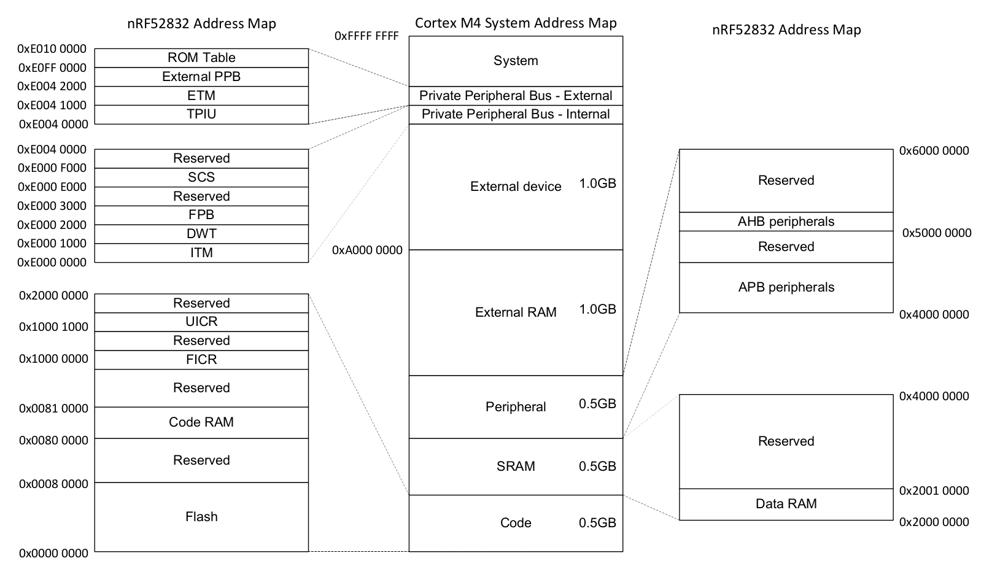

引言
歡迎閱讀嵌入式Rust:一本關於如何在裸機(比如，微處理器)上使用Rust編程語言的入門書籍。
嵌入式Rust是為誰準備的
嵌入式Rust是為了那些既想要進行嵌入式編程，又想要使用Rust語言所提供的高級概念和安全保障的人們而準備的(參見Who Rust Is For)
本書範圍
這本書的目的是：
- 讓開發者快速上手Rust嵌入式開發，比如，如何設置一個開發環境。
- 分享那些關於使用Rust進行嵌入式開發的，現存的，最好的實踐經驗，比如，如何最大程度上地利用好Rust語言的特性去寫更正確的嵌入式軟件
- 某種程度下作為工具書，比如，如何在一個項目裡將C和Rust混合在一起使用
雖然儘可能地嘗試讓這本書可以用於大多數場景，但是為了使讀者和作者更容易理解，在所有的示例中，這本書都使用了ARM Cortex-M架構。然而，這本書並不需要讀者熟悉這個架構，書中會在需要時對這個架構的特定細節進行解釋。
這本書是為誰準備的
這本書適合那些有一些嵌入式背景或者有Rust背景的人，然而我相信每一個對Rust嵌入式編程好奇的人都能從這本書中獲得某些收穫。對於那些先前沒有任何經驗的人，我們建議你讀一下“要求和預備知識”部分。從其它資料中獲取、補充缺失的知識，這樣能提高你的閱讀體驗。你可以看看“其它資源”部分，以找到你感興趣的那些主題的資源。
要求和預備知識
- 你可以輕鬆地使用Rust編程語言，且在一個桌面環境上寫過，運行過，調試過Rust應用。你應該也要熟悉2018 edition的術語，因為這本書是面向Rust 2018的。
- 你可以輕鬆地使用其它語言，比如C，C++或者Ada，開發和調試嵌入式系統，且熟悉如下的概念：
- 交叉編譯
- 存儲映射的外設（Memory Mapped Peripherals）
- 中斷
- I2C，SPI，串口等等常見的接口
其它資源
如果你還不熟悉上面提到的東西或者你對這本書中提到的某個特定主題感興趣，你也許能從這些資源中找到有用的信息。
| 主題 | 資源 | 描述 |
|---|---|---|
| Rust | Rust Book | 如果你還不熟悉Rust，我們強烈建議你讀這本書． |
| Rust, Embedded | Discovery Book | 如果你從沒做過嵌入式編程，這本書可能是個更好的開端． |
| Rust, Embedded | Embedded Rust Bookshelf | 在這裡，你可以找到由Rust的嵌入式工作組提供的許多其它資源． |
| Rust, Embedded | Embedonomicon | 用Rust進行嵌入式編程的細節． |
| Rust, Embedded | embedded FAQ | Rust在嵌入式上下文中遇到的常見問題． |
| Rust, Embedded | Comprehensive Rust 🦀: Bare Metal | 用於一天課時的裸機Rust開發課程的教學資料． |
| Interrupts | Interrupt | - |
| Memory-mapped IO/Peripherals | Memory-mapped I/O | - |
| SPI, UART, RS232, USB, I2C, TTL | Stack Exchange about SPI, UART, and other interfaces | - |
翻譯
這本書是已經被一些慷慨的志願者們翻譯了。如果你想要將你的翻譯列在這裡，請打開一個PR去添加它。
-
日文 (repository)
-
中文 (repository)
如何使用這本書
這本書通常假設你是按順序閱讀的。之後的章節是建立在先前的章節中提到的概念之上的，先前章節可能不會深入一個主題的細節，因為在隨後的章節將會再次重溫這個主題。 在大多數示例中這本書將使用STM32F3DISCOVERY開發板。這個板子是基於ARM Cortex-M架構的，且基本功能與大多數基於這個架構的CPUs功能相似。微處理器的外設和其它實現細節在不同的廠家之間是不同的，甚至來自同一個廠家，不同處理器系列之間也是不同的。 因此我們建議購買STM32F3DISCOVERY開發板來嘗試這本書中的例子。
貢獻
這本書的工作主要在這個倉庫裡管理，且主要由resouces team開發。
如果你按著這本書的操作遇到了什麼麻煩，或者這本書的一些部分不夠清楚，或者很難進行下去，那這本書就是有個bug，這個bug應該被報道給這本書的the issue tracker 。
修改拼寫錯誤和添加新內容的Pull requests非常歡迎！
二次使用這個材料
這本書根據以下許可證發佈:
- 本書中包含的代碼示例和獨立的Cargo項目均根據MIT License和Apache License v2.0發放許可的。
- 本書中包含的文檔，圖片和表格均根據CC-BY-SA v4.0發放許可的。
總之：如果你想在你的工作中使用我們的文檔或者圖片，你需要：
- 提供合適的授信 (i.e. 在你的幻燈片中提到本書，提供相關頁面的連接)
- 提供CC-BY-SA v4.0的許可證的鏈接
- 指出你是否改變了材料的內容，在同一個許可證下，可以對材料進行任何改變
也請告訴我這本書對你是否有幫助！
熟悉你的硬件
先來熟悉下我們要用的硬件。
STM32F3DISCOVERY (the "F3")

這個板子有什麼？
-
一個STM32F303VCT6微控制器。這個微控制器包含
- 一個單核的ARM Cortex-M4F 處理器，支持單精度浮點運算，72MHz的最大時鐘頻率。
- 256 KiB的"Flash"存儲。
- 48 KiB的RAM
- 多種多樣的外設，比如計時器，I2C，SPI和USART
- 通用GPIO和在板子兩側的其它類型的引腳
- 一個寫著“USB USER”的USB接口
-
一個位於LSM303DLHC芯片上的加速度計。
-
一個位於LSM303DLHC芯片上的磁力計。
-
8個擺得像一個指南針形狀的user LEDs。
-
一個二級微控制器: STM32F103。這個微控制器實際上是一個板載編程器/調試器的一部分，與名為“USB ST-LINK”的USB端口相連。
關於所列舉的功能的更多細節和開發板的更多規格請查閱STMicroelectronics網站。
提醒一句: 如果想要為板子提供外部信號，請小心。微控制器STM32F303VCT6管腳的標稱電壓是3.3伏。更多信息請查看6.2 Absolute maximum ratings section in the manual。
一個 no_std Rust環境
嵌入式編程這個詞被廣泛用於許多不同的編程場景中。小到RAM和ROM只有KB的8位機(像是ST72325xx)，大到一個具有32/64位4核Cortex-A53和1GB RAM的系統，比如樹莓派(Model B 3+)。當編寫代碼時，取決於你的目標環境和用例，將會有不同的限制和侷限。
通常嵌入式編程有兩類:
主機環境下
這類環境與一個常見的PC環境類似。意味著向你提供了一個系統接口比如 POSIX，使你能和不同的系統進行交互，比如文件系統，網絡，內存管理，進程，等等。標準庫相應地依賴這些接口去實現了它們的功能。可能有某種sysroot並限制了對RAM/ROM的使用，可能還有一些特別的硬件或者I/O。總之感覺像是在專用的PC環境上編程一樣。
裸機環境下
在一個裸機環境中，程序被加載前，環境中不存在代碼。沒有系統提供的軟件，我們不能加載標準庫。相反地，程序和它使用的crates只能使用硬件(裸機)去運行。使用no-std可以防止rust讀取標準庫。標準庫中與平臺無關的部分在libcore中。libcore剔除了那些在一個嵌入式環境中非必要的東西。比如用於動態分配的內存分配器。如果你需要這些或者其它的某些功能，通常會有提供這些功能的crates。
libstd運行時
就像之前提到的，使用libstd需要一些系統集成，這不僅僅是因為libstd使用了一個公共的方法訪問操作系統，它也提供了一個運行時環境。這個運行時環境，負責設置堆棧溢出保護，處理命令行參數，並在一個程序的主函數被激活前啟動一個主線程。在一個no_std環境中，這個運行時環境也是不可用的。
總結
#![no_std]是一個crate層級的屬性，它說明crate將連接至core-crate而不是std-crate。libcore crate是std crate的一個的子集，其與平臺無關，它對程序將要運行的系統沒有做要求。比如，它提供了像是floats，strings和切片的APIs，暴露了像是與原子操作和SIMD指令相關的處理器功能的APIs。然而，它缺少涉及到平臺集成的那些APIs。由於這些特性，no_std和libcore代碼可以用於任何引導程序(stage 0)像是bootloaders，固件或者內核。
概述
| 特性 | no_std | std |
|---|---|---|
| 堆 (dynamic memory) | * | ✓ |
| 容器 (Vec, BTreeMap, etc) | ** | ✓ |
| 棧溢出保護 | ✘ | ✓ |
| 在進入main之前運行的初始化代碼 | ✘ | ✓ |
| libstd available | ✘ | ✓ |
| libcore available | ✓ | ✓ |
| 編寫固件，內核，或者引導程序 | ✓ | ✘ |
* 只有在你使用了 alloc crate 並設置了一個適合的分配器後，比如alloc-cortex-m後可用．
** 只有在你使用了 collections crate 並配置了一個全局默認的分配器後可用．
** 由於缺少安全的隨機數產生器，所以無法使用HashMap和HashSet．
參見
工具
與微控制器打交道需要使用幾種不同的工具，因為我們要處理的架構與筆記本電腦不同，我們必須在 遠程 設備上運行和調試程序。我們將使用下面列舉出來的工具。當沒有指定一個最小版本時，最新的版本應該也可以用，但是我們還是列出了我們已經測過的那些版本。
- Rust 1.31, 1.31-beta, 或者一個更新的，支持ARM Cortex-M編譯的工具鏈。
cargo-binutils~0.1.4qemu-system-arm. 測試的版本: 3.0.0- OpenOCD >=0.8. 測試的版本: v0.9.0 and v0.10.0
- 有ARM支持的GDB。強烈建議7.12或者更新的版本。測試版本: 7.10, 7.11 和 8.1
cargo-generate或者git。這些工具都是可選的，但是跟著這本書來使用它們，會更容易。
下面的文檔將解釋我們為什麼使用這些工具。安裝指令可以在下一頁找到。
cargo-generate 或者 git
裸機編程是非標準Rust編程，為了得到正確的程序的內存佈局，需要對鏈接過程進行一些調整，這要求添加一些額外的文件(比如linker scripts)和配置(比如linker flags)。我們已經為你把這些打包進了一個模板裡了，你只需要補充缺失的信息(比如項目名和目標硬件的特性)。
我們的模板兼容cargo-generate:一個用來從模板生成新的Cargo項目的Cargo子命令。你也能使用git,curl,wget,或者你的網頁瀏覽器下載模板。
cargo-binutils
cargo-binutils是一個Cargo命令的子集，它讓我們能輕鬆使用Rust工具鏈帶來的LLVM工具。這些工具包括LLVM版本的objdump，nm和size，用來查看二進制文件。
在GNU binutils之上使用這些工具的好處是，(a)無論你的操作系統是什麼，安裝這些LLVM工具都可以用同一條命令(rustup component add llvm-tools-preview)。(b)像是objdump這樣的工具，支持所有rustc支持的架構--從ARM到x86_64--因為它們都有一樣的LLVM後端。
qemu-system-arm
QEMU是一個仿真器。在這個例子裡，我們使用能完全仿真ARM系統的改良版QEMU。我們使用QEMU在主機上運行嵌入式程序。多虧了它，你可以在沒有任何硬件的情況下，嘗試這本書的部分示例。
用於調試嵌入式Rust的工具
概述
在Rust中調試嵌入式系統需要用到專業的工具，這包括用於管理調試進程的軟件，用於觀察和控制程序執行的調試器，和用於便捷主機和嵌入式設備之間進行交互的硬件探測器．這個文檔會介紹像是Probe-rs和OpenOCD這樣的基礎軟件，以及像是GDB和Probe-rs Visual Studio Code擴展這樣常見的調試器．另外，該文檔會覆蓋像是Rusty-probe，ST-Link，J-Link，和MCU-Link這樣的硬件探測器，它們整合在一起可以高效地對嵌入式設備進行調試和編程．
驅動調試工具的軟件
Probe-rs
Probe-rs是一個現代化的，以Rust開發的軟件，被設計用來配合嵌入式系統中的調試器一起工作．不像OpenOCD，Probe-rs設計的時候就考慮到了簡單性，目標是減少在其它調試解決方案中常見的配置重擔． 它支持不同的探測器和目標架構，提供一個用於與嵌入式硬件交互的高層接口．Probe-rs直接集成了Rust工具鏈，並且通過擴展集成進了Visual Studio Code中，允許開發者精簡它們的調試工作流程．
OpenOCD (Open On-Chip Debugger)
OpenOCD是一個用於調試，測試，和編程嵌入式系統的開源軟件工具．它提供了一個主機系統和嵌入式硬件之間的接口，支持不同的傳輸層，比如JTAG和SWD（Serial Wire Debug）．OpenOCD集成了GDB，其是一個調試器．OpenOCD受到了廣泛的支持，擁有大量的文檔和一個龐大的社區，但是配置可能會很複雜，特別是對於自定義的嵌入式設置．
Debuggers
調試器允許開發者觀察和控制一個程序的執行，以辨別和糾正錯誤或者bugs．它提供像是設置斷點，一行一行地步進代碼，和研究變量的值以及內存的狀態等功能．調試器本質上是為了通過軟件開發和維護，使得開發者可以確保他們的代碼的行為在不同環境下就像他們預期的那樣運行．
調試器可以知道如何：
- 與映射到存儲上的寄存器交互．
- 設置斷點．
- 讀取和寫入映射到存儲上的寄存器．
- 檢測什麼時候MCU因為一個調試時間被掛了起來．
- 在遇到一個調試事件後繼續MCU的執行．
- 擦出和寫入微控制器的FLASH．
Probe-rs Visual Studio Code Extension
Probe-rs有一個Visual Studio Code的擴展，提供了不需要額外設置的無縫的調試體驗．通過它的幫助，開發者可以使用Rust特定的特性，像是漂亮的打印和詳細的錯誤信息，確保它們的調試過程可以與Rust的生態對齊．
GDB (GNU Debugger)
GDB是一個多用途的調試工具，其允許開發者研究程序的狀態，無論其正在運行中還是程序崩潰後．對於嵌入式Rust，GDB通過OpenOCD或者其它的調試服務器鏈接到目標系統上去和嵌入式代碼交互．GDB是高度可配置的，並且支持像是遠程調試，變量檢測，和條件斷點．它可以被用於多個平臺，並對Rust特定的調試需求有廣泛的支持，比如好看的打印和與IDEs集成．
探測器
硬件探頭是一個被用於嵌入式系統的開發和調試的設備，其可以使得主機和目標嵌入式設備間的通信變得簡單．它通常支持像是JTAG或者SWD這樣的協議，可以編程，調試和分析嵌入式系統上的微控制器或者微處理器．硬件探頭對於要設置斷點，步進代碼，和觀察內存與處理器的寄存器的開發者來說很重要，可以讓開發者們高效地實時地分析和修復問題．
Rusty-probe
Rusty-probe是一個開源的基於USB的硬件調試探測器，被設計用來輔助probe-rs一起工作．Rusy-Probe和probe-rs的結合為嵌入式Rust應用的開發者提供了一個易用的，成本高效的解決方案．
ST-Link
ST-Link是一個由STMicroelectronics開發的常見的調試和編程探測器，其主要用於它們的STM32和STM8微控制器系列．它支持通過JTAG或者SWD接口進行調試和編程．因為STMicroelectronics的大量的開發板對其直接支持並且它集成進了主流的IDEs中，所以使得它成為使用STM微控制器的開發者的首選．
J-Link
J-Link是由SEGGER微控制器開發的，它是一個魯棒和功能豐富的調試器，其支持大量的CPU內核和設備，不僅僅是ARM，比如RISC-V．因其高性能和可讀性而聞名，J-Link支持不同的通信接口，包括JTAG，SWD，和fine-pitch JTAG接口．它因其高級的特性而受到歡迎，比如在flash存儲中的無限的斷點和它與多種開發環境的兼容性．
MCU-Link
MCU-Link是一個調試探測器，也可以作為編程器使用，由NXP Semiconductors提供．它支持不同的ARM Cortex微控制器且可以與像是MCUXpresso IDE這樣的開發工具進行無縫地交互．MCU-Link因其豐富的功能和易使用而聞名，使它成為像是愛好者，教育者，和專業的開發者們的可行的選項．
安裝工具
這一頁包含的工具安裝指令與操作系統無關：
Rust 工具鏈
跟著https://rustup.rs的指令安裝rustup。
注意 確保你的編譯器版本等於或者大於1.31版本。rustc -V應該返回一個比下列日期更新的日期。
$ rustc -V
rustc 1.31.1 (b6c32da9b 2018-12-18)
考慮到帶寬和磁盤的使用量，默認的安裝只支持主機環境的編譯。為了添加對ARM Cortex-M架構交叉編譯的支持，從下列編譯目標中選擇一個。對於這本書裡使用的STM32F3DISCOVERY板子，使用thumbv7em-none-eabihf作為目標。
Cortex-M0, M0+, 和 M1 (ARMv6-M 架構):
rustup target add thumbv6m-none-eabi
Cortex-M3 (ARMv7-M 架構):
rustup target add thumbv7m-none-eabi
沒有硬件浮點單元的Cortex-M4和M7 (ARMv7E-M架構)
rustup target add thumbv7em-none-eabi
具有硬件浮點單元的Cortex-M4F和M7F (ARMv7E-M架構)
rustup target add thumbv7em-none-eabihf
Cortex-M23 (ARMv8-M架構):
rustup target add thumbv8m.base-none-eabi
Cortex-M33和M35P (ARMv8-M架構):
rustup target add thumbv8m.main-none-eabi
具有硬件浮點單元的Cortex-M33F和M35PF (ARMv8-M架構):
rustup target add thumbv8m.main-none-eabihf
cargo-binutils
cargo install cargo-binutils
rustup component add llvm-tools-preview
WINDOWS: 需要預先安裝 C++ Build Tools for Visual Studio 2019。https://visualstudio.microsoft.com/thank-you-downloading-visual-studio/?sku=BuildTools&rel=16
cargo-generate
我們隨後將使用這個來從模板生成一個項目。
cargo install cargo-generate
注意:在某些Linux發行版上(e.g. Ubuntu) 在安裝cargo-generate之前，你可能需要安裝libssl-dev和pkg-config
特定於操作系統的指令
現在根據你使用的操作系統，來執行對應的指令:
Linux
這部分是在某些Linux發行版下的安裝指令。
依賴包
- Ubuntu 18.04 或者更新的版本 / Debian stretch 或者更新的版本
注意
gdb-multiarch是你將用來調試你的ARM Cortex-M程序的GDB命令
sudo apt install gdb-multiarch openocd qemu-system-arm
- Ubuntu 14.04 and 16.04
注意
arm-none-eabi-gdb是你將用來調試你的ARM Cortex-M程序的GDB命令
sudo apt install gdb-arm-none-eabi openocd qemu-system-arm
- Fedora 27 或者更新的版本
sudo dnf install gdb openocd qemu-system-arm
- Arch Linux
注意
arm-none-eabi-gdb是你將用來調試你的ARM Cortex-M程序的GDB命令
sudo pacman -S arm-none-eabi-gdb qemu-system-arm openocd
udev 規則
這個規則可以讓你在不使用超級用戶權限的情況下，使用OpenOCD和Discovery開發板。
生成包含下列內容的 /etc/udev/rules.d/70-st-link.rules 文件
# STM32F3DISCOVERY rev A/B - ST-LINK/V2
ATTRS{idVendor}=="0483", ATTRS{idProduct}=="3748", TAG+="uaccess"
# STM32F3DISCOVERY rev C+ - ST-LINK/V2-1
ATTRS{idVendor}=="0483", ATTRS{idProduct}=="374b", TAG+="uaccess"
然後重新加載所有的udev規則
sudo udevadm control --reload-rules
如果你已經把開發板插入到筆記本中了，請拔下它然後再插上它。
你可以通過運行這個命令檢查權限:
lsusb
終端可能有如下顯示
(..)
Bus 001 Device 018: ID 0483:374b STMicroelectronics ST-LINK/V2.1
(..)
記住bus和device號，使用這些數字組合成一個像是 /dev/bus/usb/<bus>/<device> 這樣的路徑。然後像這樣使用這個路徑:
ls -l /dev/bus/usb/001/018
crw-------+ 1 root root 189, 17 Sep 13 12:34 /dev/bus/usb/001/018
getfacl /dev/bus/usb/001/018 | grep user
user::rw-
user:you:rw-
權限後的 + 指出存在一個擴展權限。getfacl 命令顯示，user也就是你，可以使用這個設備。
現在，去往下個章節.
macOS
所有的工具都可以使用Homebrew或者MacPorts來安裝：
使用Homebrew安裝工具
$ # GDB
$ brew install armmbed/formulae/arm-none-eabi-gcc
$ # OpenOCD
$ brew install openocd
$ # QEMU
$ brew install qemu
注意 如果OpenOCD崩潰了，你可能需要用以下方法安裝最新版本:
$ brew install --HEAD openocd
使用MacPorts安裝工具
$ # GDB
$ sudo port install arm-none-eabi-gcc
$ # OpenOCD
$ sudo port install openocd
$ # QEMU
$ sudo port install qemu
這是全部內容，請轉入下個章節．
Windows
arm-none-eabi-gdb
ARM提供了用於Windows的.exe安裝程序。從這裡獲取, 然後按照說明操作。
在完成安裝之前，勾選/選擇"Add path to environment variable"選項。
然後驗證環境變量是否添加到 %PATH%中:
$ arm-none-eabi-gdb -v
GNU gdb (GNU Tools for Arm Embedded Processors 7-2018-q2-update) 8.1.0.20180315-git
(..)
OpenOCD
OpenOCD 官方沒有提供Windows的二進制版本， 若你沒有心情去折騰編譯，這裡有xPack提供的一個二進制發佈.。按照說明進行安裝。然後更新你的%PATH% 環境變量，將安裝目錄包括進去。 (C:\Users\USERNAME\AppData\Roaming\xPacks\@xpack-dev-tools\openocd\0.10.0-13.1\.content\bin\,
如果使用簡易安裝)
使用以下命令驗證OpenOCD是否在你的%PATH%環境變量中 :
$ openocd -v
Open On-Chip Debugger 0.10.0
(..)
QEMU
從官網獲取QEMU。
ST-LINK USB driver
你還需要安裝這個 USB驅動 否則OpenOCD將無法工作。按照安裝程序的說明，確保你安裝了正確版本（32位或64位）的驅動程序。
以上是全部內容！轉到 下個章節。
安裝驗證
在這個章節中我們將檢查工具和驅動是否已經被正確地安裝和配置了。
使用一個micro USB線纜將你的筆記本/個人電腦連接到discovery開發板上。discovery開發板有兩個USB連接器；使用標記著"USB ST-LINK"的那個，它位於開發板邊緣的中間位置。
也要檢查下ST-LINK的短路帽是否被安裝了。看下面的圖；ST-LINK短路帽用紅色圈起來了。

現在運行下面的命令:
openocd -f interface/stlink.cfg -f target/stm32f3x.cfg
注意: 舊版的openocd, 包括從2017發佈的0.10.0, 不包含新的(且更適合的)
interface/stlink.cfg文件； 你需要使用interface/stlink-v2.cfg或者interface/stlink-v2-1.cfg。
你應該看到了下面的輸出，且程序應該阻塞住了控制檯:
Open On-Chip Debugger 0.10.0
Licensed under GNU GPL v2
For bug reports, read
http://openocd.org/doc/doxygen/bugs.html
Info : auto-selecting first available session transport "hla_swd". To override use 'transport select <transport>'.
adapter speed: 1000 kHz
adapter_nsrst_delay: 100
Info : The selected transport took over low-level target control. The results might differ compared to plain JTAG/SWD
none separate
Info : Unable to match requested speed 1000 kHz, using 950 kHz
Info : Unable to match requested speed 1000 kHz, using 950 kHz
Info : clock speed 950 kHz
Info : STLINK v2 JTAG v27 API v2 SWIM v15 VID 0x0483 PID 0x374B
Info : using stlink api v2
Info : Target voltage: 2.919881
Info : stm32f3x.cpu: hardware has 6 breakpoints, 4 watchpoints
內容可能並不是一模一樣，但是在最後一行，你應該看到了breakpoints和watchpoints，如果你看到了，那就終止OpenOCD進程然後進入下個章節
如果你沒看到"breakpoints"這行，嘗試下下列命令中的某一個命令。
openocd -f interface/stlink-v2.cfg -f target/stm32f3x.cfg
openocd -f interface/stlink-v2-1.cfg -f target/stm32f3x.cfg
如果這些命令的某條起作用了，那意味著你使用的discovery開發板是一箇舊的版本。那也不成問題，但是你要記住這件事，因為隨後你的配置可能有點不同。你可以移到下個章節了。
如果這些命令在普通用戶模式下都沒用，嘗試下使用root模式運行它們(e.g. sudo openocd ..)。如果命令在root模式下起作用，需要檢查下udev rules是否被正確地設置了。
如果這些都試了，OpenOCD還不工作，請打開一個issue，我們將幫助你！
開始
在這部分裡，你將會經歷編寫，編譯，燒錄和調試嵌入式程序。大多數的例子都不需要特定的硬件就可以試試，因為我們將要向你展示一個開源硬件仿真器，QEMU的基本使用。唯一需要硬件的部分，那就是，硬件那一章，我們會使用OpenOCD去編程一個STM32F3DISCOVERY。
QEMU
我們將開始為LM3S6965編寫程序，一個Cortex-M3微控制器。因為它能使用QEMU仿真，所以我們選擇它作為我們的第一個目標，本節中，不需要使用硬件，我們注意力可以集中在工具和開發過程上。
重要 在這個引導裡，我們將使用"app"這個名字來代指項目名。無論何時你看到單詞"app"，你應該用你選擇的項目名來替代"app"。或者你也可以選擇把你的項目命名為"app"，避免要替換掉。
生成一個非標準的 Rust program
我們將使用cortex-m-quickstart項目模板來生成一個新項目。生成的項目將包含一個最基本的應用:對於一個新的嵌入式rust應用來說，是一個很好的開始。另外，項目將包含一個example文件夾，文件夾中有許多獨立的應用，突出了一些關鍵的嵌入式rust的功能。
使用 cargo-generate
首先安裝 cargo-generate
cargo install cargo-generate
然後生成一個新項目
cargo generate --git https://github.com/rust-embedded/cortex-m-quickstart
Project Name: app
Creating project called `app`...
Done! New project created /tmp/app
cd app
使用 git
克隆倉庫
git clone https://github.com/rust-embedded/cortex-m-quickstart app
cd app
然後補充Cargo.toml文件中的佔位符
[package]
authors = ["{{authors}}"] # "{{authors}}" -> "John Smith"
edition = "2018"
name = "{{project-name}}" # "{{project-name}}" -> "app"
version = "0.1.0"
# ..
[[bin]]
name = "{{project-name}}" # "{{project-name}}" -> "app"
test = false
bench = false
要麼使用
抓取最新的 cortex-m-quickstart 模板，解壓它。
curl -LO https://github.com/rust-embedded/cortex-m-quickstart/archive/master.zip
unzip master.zip
mv cortex-m-quickstart-master app
cd app
或者你可以瀏覽cortex-m-quickstart，點擊綠色的 "Clone or download" 按鈕，然後點擊 "Download ZIP" 。
然後像在 “使用 git” 那裡的第二部分寫的那樣填充 Cargo.toml 。
項目概覽
這是src/main.rs中源碼最重要的部分。
#![no_std]
#![no_main]
use panic_halt as _;
use cortex_m_rt::entry;
#[entry]
fn main() -> ! {
loop {
// your code goes here
}
}這個程序與標準Rust程序有一點不同，讓我們走近點看看。
#![no_std]指出這個程序將 不會 鏈接標準cratestd。反而它將會鏈接到它的子集: core crate。
#![no_main]指出這個程序將不會使用標準的且被大多數Rust程序使用的main接口。使用no_main的主要理由是，在no_std上下文中使用main接口需要 nightly 版的 Rust。
use panic_halt as _;。這個crate提供了一個panic_handler，它定義了程序陷入panic時的行為。我們將會在這本書的運行時恐慌(Panicking)章節中覆蓋更多的細節。
#[entry] 是一個由cortex-m-rt提供的屬性，它用來標記程序的入口。當我們不使用標準的main接口時，我們需要其它方法來指示程序的入口，那就是#[entry]。
fn main() -> !。我們的程序將會是運行在目標板子上的 唯一 的進程，因此我們不想要它結束！我們使用一個發散函數 (函數簽名中的 -> ! )來確保在編譯時就是這麼回事兒。
交叉編譯
下一步是為Cortex-M3架構交叉編譯程序。如果你知道編譯目標($TRIPLE)應該是什麼，運行cargo build --target $TRIPLE就可以了。幸運地，模板中的.cargo/config.toml有這個答案:
tail -n6 .cargo/config.toml
[build]
# Pick ONE of these compilation targets
# target = "thumbv6m-none-eabi" # Cortex-M0 and Cortex-M0+
target = "thumbv7m-none-eabi" # Cortex-M3
# target = "thumbv7em-none-eabi" # Cortex-M4 and Cortex-M7 (no FPU)
# target = "thumbv7em-none-eabihf" # Cortex-M4F and Cortex-M7F (with FPU)
為了交叉編譯Cortex-M3架構我們不得不使用thumbv7m-none-eabi。當安裝Rust工具時，target不會自動被安裝，如果還沒有添加，現在可以去添加那個target到工具鏈上。
rustup target add thumbv7m-none-eabi
因為thumbv7m-none-eabi編譯目標在你的.cargo/config.toml中被設置成默認值，下面的兩個命令是一樣的效果:
cargo build --target thumbv7m-none-eabi
cargo build
檢查
現在在target/thumbv7m-none-eabi/debug/app中有一個非主機環境的ELF二進制文件。我們能使用cargo-binutils檢查它。
使用cargo-readobj我們能打印ELF頭，確認這是一個ARM二進制。
cargo readobj --bin app -- --file-headers
注意:
--bin app是一個用來查看二進制項target/$TRIPLE/debug/app的語法糖--bin app需要時也會重新編譯二進制項。
ELF Header:
Magic: 7f 45 4c 46 01 01 01 00 00 00 00 00 00 00 00 00
Class: ELF32
Data: 2's complement, little endian
Version: 1 (current)
OS/ABI: UNIX - System V
ABI Version: 0x0
Type: EXEC (Executable file)
Machine: ARM
Version: 0x1
Entry point address: 0x405
Start of program headers: 52 (bytes into file)
Start of section headers: 153204 (bytes into file)
Flags: 0x5000200
Size of this header: 52 (bytes)
Size of program headers: 32 (bytes)
Number of program headers: 2
Size of section headers: 40 (bytes)
Number of section headers: 19
Section header string table index: 18
cargo-size 能打印二進制項的linker section的大小。
cargo size --bin app --release -- -A
我們使用--release查看優化後的版本
app :
section size addr
.vector_table 1024 0x0
.text 92 0x400
.rodata 0 0x45c
.data 0 0x20000000
.bss 0 0x20000000
.debug_str 2958 0x0
.debug_loc 19 0x0
.debug_abbrev 567 0x0
.debug_info 4929 0x0
.debug_ranges 40 0x0
.debug_macinfo 1 0x0
.debug_pubnames 2035 0x0
.debug_pubtypes 1892 0x0
.ARM.attributes 46 0x0
.debug_frame 100 0x0
.debug_line 867 0x0
Total 14570
ELF linker sections的複習
.text包含程序指令.rodata包含像是字符串這樣的常量.data包含靜態分配的初始值非零的變量.bss也包含靜態分配的初始值是零的變量.vector_table是一個我們用來存儲向量(中斷)表的非標準的section.ARM.attributes和.debug_*sections包含元數據，當燒錄二進制文件時，它們不會被加載到目標上。
重要: ELF文件包含像是調試信息這樣的元數據，因此它們在硬盤上的尺寸沒有正確地反應處程序被燒錄到設備上時將佔據的空間的大小。要一直使用cargo-size檢查一個二進制項的大小。
cargo-objdump 能用來反編譯二進制項。
cargo objdump --bin app --release -- --disassemble --no-show-raw-insn --print-imm-hex
注意 如果上面的命令抱怨
Unknown command line argument看下面的bug報告:https://github.com/rust-embedded/book/issues/269
注意 在你的系統上這個輸出可能不一樣。rustc, LLVM 和庫的新版本能產出不同的彙編。我們截取了一些指令
app: file format ELF32-arm-little
Disassembly of section .text:
main:
400: bl #0x256
404: b #-0x4 <main+0x4>
Reset:
406: bl #0x24e
40a: movw r0, #0x0
< .. 截斷了更多的指令 .. >
DefaultHandler_:
656: b #-0x4 <DefaultHandler_>
UsageFault:
657: strb r7, [r4, #0x3]
DefaultPreInit:
658: bx lr
__pre_init:
659: strb r7, [r0, #0x1]
__nop:
65a: bx lr
HardFaultTrampoline:
65c: mrs r0, msp
660: b #-0x2 <HardFault_>
HardFault_:
662: b #-0x4 <HardFault_>
HardFault:
663: <unknown>
運行
接下來，讓我們看一個嵌入式程序是如何在QEMU上運行的！此刻我們將使用 hello 示例，來做些真正的事。
為了方便起見，這是examples/hello.rs的源碼:
//! 使用semihosting在主機調試臺上打印 "Hello, world!"
#![no_main]
#![no_std]
use panic_halt as _;
use cortex_m_rt::entry;
use cortex_m_semihosting::{debug, hprintln};
#[entry]
fn main() -> ! {
hprintln!("Hello, world!").unwrap();
// 退出 QEMU
// NOTE 不要在硬件上運行這個;它會打破OpenOCD的狀態
debug::exit(debug::EXIT_SUCCESS);
loop {}
}這個程序使用被叫做semihosting的東西去打印文本到主機調試臺上。當使用的是真實的硬件時，需要一個調試對話這個程序才能工作，但是當使用的是QEMU時這就可以工作了。
讓我們開始編譯示例
cargo build --example hello
輸出的二進制項將位於target/thumbv7m-none-eabi/debug/examples/hello。
為了在QEMU上運行這個二進制項，執行下列的命令:
qemu-system-arm \
-cpu cortex-m3 \
-machine lm3s6965evb \
-nographic \
-semihosting-config enable=on,target=native \
-kernel target/thumbv7m-none-eabi/debug/examples/hello
Hello, world!
這個命令應該在打印文本之後成功地退出 (exit code = 0)。你可以使用下列的指令檢查下:
echo $?
0
讓我們看看QEMU命令:
-
qemu-system-arm。這是QEMU仿真器。這些QEMU二進制項有一些變體，這個仿真器能做ARM機器的全系統仿真。 -
-cpu cortex-m3。這告訴QEMU去仿真一個Cortex-M3 CPU。指定CPU模型會讓我們捕捉到一些誤編譯錯誤:比如，運行一個為Cortex-M4F編譯的程序，它具有一個硬件FPU，在執行時將會使QEMU報錯。 -
-machine lm3s6965evb。這告訴QEMU去仿真 LM3S6965EVB，一個包含LM3S6965微控制器的評估板。 -
-nographic。這告訴QEMU不要啟動它的GUI。 -
-semihosting-config (..)。這告訴QEMU使能半主機模式。半主機模式允許被仿真的設備，使用主機的stdout，stderr，和stdin，並在主機上創建文件。 -
-kernel $file。這告訴QEMU在仿真機器上加載和運行哪個二進制項。
輸入這麼長的QEMU命令太費功夫了！我們可以設置一個自定義運行器(runner)簡化步驟。.cargo/config.toml 有一個被註釋掉的，可以調用QEMU的運行器。讓我們去掉註釋。
head -n3 .cargo/config.toml
[target.thumbv7m-none-eabi]
# uncomment this to make `cargo run` execute programs on QEMU
runner = "qemu-system-arm -cpu cortex-m3 -machine lm3s6965evb -nographic -semihosting-config enable=on,target=native -kernel"
這個運行器只會應用於 thumbv7m-none-eabi 目標，它是我們的默認編譯目標。現在 cargo run 將會編譯程序且在QEMU上運行它。
cargo run --example hello --release
Compiling app v0.1.0 (file:///tmp/app)
Finished release [optimized + debuginfo] target(s) in 0.26s
Running `qemu-system-arm -cpu cortex-m3 -machine lm3s6965evb -nographic -semihosting-config enable=on,target=native -kernel target/thumbv7m-none-eabi/release/examples/hello`
Hello, world!
調試
對於嵌入式開發來說，調試非常重要。讓我們來看下如何調試它。
因為我們想要調試的程序所運行的機器上並沒有運行一個調試器程序(GDB或者LLDB)，所以調試一個嵌入式設備就涉及到了 遠程 調試
遠程調試涉及一個客戶端和一個服務器。在QEMU的情況中，客戶端將是一個GDB(或者LLDM)進程且服務器將會是運行著嵌入式程序的QEMU進程。
在這部分，我們要使用我們已經編譯的 hello 示例。
調試的第一步是在調試模式中啟動QEMU：
qemu-system-arm \
-cpu cortex-m3 \
-machine lm3s6965evb \
-nographic \
-semihosting-config enable=on,target=native \
-gdb tcp::3333 \
-S \
-kernel target/thumbv7m-none-eabi/debug/examples/hello
這個命令將不打印任何東西到調試臺上，且將會阻塞住終端。此刻我們還傳遞了兩個額外的標誌。
-gdb tcp::3333。這告訴QEMU在3333的TCP端口上等待一個GDB連接。-S。這告訴QEMU在啟動時，凍結機器。沒有這個，在我們有機會啟動調試器之前，程序有可能已經到達了主程序的底部了!
接下來我們在另一個終端啟動GDB，且告訴它去加載示例的調試符號。
gdb-multiarch -q target/thumbv7m-none-eabi/debug/examples/hello
注意: 你可能需要另一個gdb版本而不是 gdb-multiarch，取決於你在安裝章節中安裝了哪個。這個可能是 arm-none-eabi-gdb 或者只是 gdb。
然後在GDB shell中，我們連接QEMU，QEMU正在等待一個在3333 TCP端口上的連接。
target remote :3333
Remote debugging using :3333
Reset () at $REGISTRY/cortex-m-rt-0.6.1/src/lib.rs:473
473 pub unsafe extern "C" fn Reset() -> ! {
你將看到，進程被掛起了，程序計數器正指向一個名為 Reset 的函數。那是 reset 句柄：Cortex-M 內核在啟動時執行的中斷函數。
注意在一些配置中，可能不會像上面一樣，顯示
Reset() at $REGISTRY/cortex-m-rt-0.6.1/src/lib.rs:473，gdb可能打印一些警告，比如:
core::num::bignum::Big32x40::mul_small () at src/libcore/num/bignum.rs:254src/libcore/num/bignum.rs: No such file or directory.那是一個已知的小bug，你可以安全地忽略這些警告，你非常大可能已經進入Reset()了。
這個reset句柄最終將調用我們的主函數，讓我們使用一個斷點和continue命令跳過所有的步驟。為了設置斷點，讓我們首先看下我們想要在我們代碼哪裡打斷點，使用list指令
list main
這將顯示從examples/hello.rs文件來的源代碼。
6 use panic_halt as _;
7
8 use cortex_m_rt::entry;
9 use cortex_m_semihosting::{debug, hprintln};
10
11 #[entry]
12 fn main() -> ! {
13 hprintln!("Hello, world!").unwrap();
14
15 // exit QEMU
我們想要在"Hello, world!"之前添加一個斷點，在13行那裡。我們可以使用break命令
break 13
我們現在能使用continue命令指示gdb運行到我們的主函數。
continue
Continuing.
Breakpoint 1, hello::__cortex_m_rt_main () at examples\hello.rs:13
13 hprintln!("Hello, world!").unwrap();
我們現在靠近打印"Hello, world!"的代碼。讓我們使用next命令繼續前進。
next
16 debug::exit(debug::EXIT_SUCCESS);
在這裡，你應該看到 "Hello, world!" 被打印到正在運行 qemu-system-arm 的終端上。
$ qemu-system-arm (..)
Hello, world!
再次調用next將會終止QEMU進程。
next
[Inferior 1 (Remote target) exited normally]
你現在能退出GDB的會話了。
quit
硬件
現在你應該有點熟悉工具和開發過程了。在這部分我們將切換到真正的硬件上；步驟非常相似。讓我們深入下去。
認識你的硬件
在我們開始之前，你需要了解下你的目標設備的一些特性，因為你將用它們來配置項目:
- ARM 內核。比如 Cortex-M3 。
- ARM 內核包括一個FPU嗎?Cortex-M4F和Cortex-M7F有。
- 目標設備有多少Flash和RAM？比如 256KiB的Flash和32KiB的RAM。
- Flash和RAM映射在地址空間的什麼位置?比如 RAM通常位於
0x2000_0000地址處。
你可以在你的設備的數據手冊和參考手冊上找到這些信息。
這部分，要使用我們的參考硬件，STM32F3DISCOVERY。這個板子包含一個STM32F303VCT6微控制器。這個微控制器擁有:
- 一個Cortex-M4F核心，它包含一個單精度FPU。
- 位於 0x0800_0000 地址的256KiB的Flash。
- 位於 0x2000_0000 地址的40KiB的RAM。(這裡還有其它的RAM區域，但是為了方便起見，我們將忽略它)。
配置
我們將使用一個新的模板實例從零開始。對於新手，請參考先前的QEMU章節，瞭解如何在沒有cargo-generate的情況下完成配置。
$ cargo generate --git https://github.com/rust-embedded/cortex-m-quickstart
Project Name: app
Creating project called `app`...
Done! New project created /tmp/app
$ cd app
第一步是在.cargo/config.toml中設置一個默認編譯目標。
tail -n5 .cargo/config.toml
# Pick ONE of these compilation targets
# target = "thumbv6m-none-eabi" # Cortex-M0 and Cortex-M0+
# target = "thumbv7m-none-eabi" # Cortex-M3
# target = "thumbv7em-none-eabi" # Cortex-M4 and Cortex-M7 (no FPU)
target = "thumbv7em-none-eabihf" # Cortex-M4F and Cortex-M7F (with FPU)
我們將使用 thumbv7em-none-eabihf，因為它包括了Cortex-M4F內核．
注意：你可能還記得先前的章節，我們必須要安裝所有的目標平臺，這個平臺是一個新的． 所以，不要忘了為這個平臺運行安裝步驟
rustup target add thumbv7em-none-eabihf．
第二步是將存儲區域信息(memory region information)輸入memory.x。
$ cat memory.x
/* Linker script for the STM32F303VCT6 */
MEMORY
{
/* NOTE 1 K = 1 KiBi = 1024 bytes */
FLASH : ORIGIN = 0x08000000, LENGTH = 256K
RAM : ORIGIN = 0x20000000, LENGTH = 40K
}
注意：如果你因為某些理由，在對某個編譯目標首次編譯後，改變了
memory.x文件，需要在cargo build之前執行cargo clean。因為cargo build可能不會跟蹤memory.x的更新。
我們將再次使用hello示例作為開始，但是首先我們必須做一個小改變。
在examples/hello.rs中，確保debug::exit()調用被註釋掉了或者移除掉了。它只能用於在QEMU中運行的情況。
#[entry]
fn main() -> ! {
hprintln!("Hello, world!").unwrap();
// 退出 QEMU
// 注意 不要在硬件上運行這個；它會打破OpenOCD的狀態
// debug::exit(debug::EXIT_SUCCESS);
loop {}
}你可以像你之前做的一樣，使用cargo build檢查編譯程序，使用cargo-binutils觀察二進制項。cortex-m-rt庫可以處理所有讓芯片運行起來所需的魔法，幾乎所有的Cortex-M CPUs都按同樣的方式啟動。
cargo build --example hello
調試
調試會看起來有點不一樣。事實上，取決於不同的目標設備，第一步可能看起來不一樣。在這個章節裡，我們將展示，調試一個在STM32F3DISCOVERY上運行的程序，所需要的步驟。這作為一個參考。關於調試有關的設備特定的信息，可以看the Debugonomicon。
像之前一樣，我們將進行遠程調試，客戶端將是一個GDB進程。不同的是，OpenOCD將是服務器。
像是在安裝驗證中做的那樣，把你的筆記本/個人電腦和discovery開發板連接起來，檢查ST-LINK的短路帽是否被安裝了。
在一個終端上運行 openocd 連接到你的開發板上的 ST-LINK 。從模板的根目錄運行這個命令；openocd 將會選擇 openocd.cfg 文件，它指出了所使用的接口文件(interface file)和目標文件(target file)。
cat openocd.cfg
# Sample OpenOCD configuration for the STM32F3DISCOVERY development board
# Depending on the hardware revision you got you'll have to pick ONE of these
# interfaces. At any time only one interface should be commented out.
# Revision C (newer revision)
source [find interface/stlink.cfg]
# Revision A and B (older revisions)
# source [find interface/stlink-v2.cfg]
source [find target/stm32f3x.cfg]
注意 如果你在安裝驗證章節中，發現你的discovery開發板是一個更舊的版本，那麼你應該修改你的
openocd.cfg文件，註釋掉interface/stlink.cfg，讓它去使用interface/stlink-v2.cfg。
$ openocd
Open On-Chip Debugger 0.10.0
Licensed under GNU GPL v2
For bug reports, read
http://openocd.org/doc/doxygen/bugs.html
Info : auto-selecting first available session transport "hla_swd". To override use 'transport select <transport>'.
adapter speed: 1000 kHz
adapter_nsrst_delay: 100
Info : The selected transport took over low-level target control. The results might differ compared to plain JTAG/SWD
none separate
Info : Unable to match requested speed 1000 kHz, using 950 kHz
Info : Unable to match requested speed 1000 kHz, using 950 kHz
Info : clock speed 950 kHz
Info : STLINK v2 JTAG v27 API v2 SWIM v15 VID 0x0483 PID 0x374B
Info : using stlink api v2
Info : Target voltage: 2.913879
Info : stm32f3x.cpu: hardware has 6 breakpoints, 4 watchpoints
在另一個終端，也是從模板的根目錄，運行GDB。
gdb-multiarch -q target/thumbv7em-none-eabihf/debug/examples/hello
注意: 像之前一樣，你可能需要另一個版本的gdb而不是gdb-multiarch，取決於你在之前的章節安裝了什麼工具。這也可能使用的是arm-none-eabi-gdb或者只是gdb 。
接下來把GDB連接到OpenOCD，它正在等待一個在端口3333上的TCP鏈接。
(gdb) target remote :3333
Remote debugging using :3333
0x00000000 in ?? ()
接下來使用load命令，繼續 flash(加載) 程序到微控制器上。
(gdb) load
Loading section .vector_table, size 0x400 lma 0x8000000
Loading section .text, size 0x1518 lma 0x8000400
Loading section .rodata, size 0x414 lma 0x8001918
Start address 0x08000400, load size 7468
Transfer rate: 13 KB/sec, 2489 bytes/write.
程序現在被加載了。這個程序使用半主機模式，因此在我們調用半主機模式之前，我們必須告訴OpenOCD使能半主機。你可以使用 monitor 命令，發送命令給OpenOCD 。
(gdb) monitor arm semihosting enable
semihosting is enabled
通過調用
monitor help命令，你能看到所有的OpenOCD命令。
像我們之前一樣，使用一個斷點和 continue 命令我們可以跳過所有的步驟到 main 。
(gdb) break main
Breakpoint 1 at 0x8000490: file examples/hello.rs, line 11.
Note: automatically using hardware breakpoints for read-only addresses.
(gdb) continue
Continuing.
Breakpoint 1, hello::__cortex_m_rt_main_trampoline () at examples/hello.rs:11
11 #[entry]
注意 如果在你使用了上面的
continue命令後，GDB阻塞住了終端而不是停在了斷點處，你可能需要檢查下memory.x文件中的存儲分區的信息，對於你的設備來說是否被正確的設置了起始位置和大小 。
使用step步進main函數里。
(gdb) step
halted: PC: 0x08000496
hello::__cortex_m_rt_main () at examples/hello.rs:13
13 hprintln!("Hello, world!").unwrap();
在使用了next讓函數繼續執行之後，你應該看到 "Hello, world!" 被打印到了OpenOCD控制檯上。
$ openocd
(..)
Info : halted: PC: 0x08000e6c
Hello, world!
Info : halted: PC: 0x08000d62
Info : halted: PC: 0x08000d64
Info : halted: PC: 0x08000d66
Info : halted: PC: 0x08000d6a
Info : halted: PC: 0x08000a0c
Info : halted: PC: 0x08000d70
Info : halted: PC: 0x08000d72
消息只打印一次，然後進入定義在19行的無限循環中: loop {}
使用 quit 命令，你現在可以退出 GDB 了。
(gdb) quit
A debugging session is active.
Inferior 1 [Remote target] will be detached.
Quit anyway? (y or n)
現在調試比之前多了點步驟，因此我們要把所有步驟打包進一個名為 openocd.gdb 的GDB腳本中。這個文件在 cargo generate 步驟中被生成，因此不需要任何修改了。讓我們看一下:
cat openocd.gdb
target extended-remote :3333
# print demangled symbols
set print asm-demangle on
# detect unhandled exceptions, hard faults and panics
break DefaultHandler
break HardFault
break rust_begin_unwind
monitor arm semihosting enable
load
# start the process but immediately halt the processor
stepi
現在運行 <gdb> -x openocd.gdb target/thumbv7em-none-eabihf/debug/examples/hello 將會立即把GDB和OpenOCD連接起來，使能半主機，加載程序和啟動進程。
另外，你能將 <gdb> -x openocd.gdb 放進一個自定義的 runner 中，使 cargo run 能編譯程序並啟動一個GDB會話。這個 runner 在 .cargo/config.toml 中，但是它被註釋掉了。
head -n10 .cargo/config.toml
[target.thumbv7m-none-eabi]
# uncomment this to make `cargo run` execute programs on QEMU
# runner = "qemu-system-arm -cpu cortex-m3 -machine lm3s6965evb -nographic -semihosting-config enable=on,target=native -kernel"
[target.'cfg(all(target_arch = "arm", target_os = "none"))']
# uncomment ONE of these three option to make `cargo run` start a GDB session
# which option to pick depends on your system
runner = "arm-none-eabi-gdb -x openocd.gdb"
# runner = "gdb-multiarch -x openocd.gdb"
# runner = "gdb -x openocd.gdb"
$ cargo run --example hello
(..)
Loading section .vector_table, size 0x400 lma 0x8000000
Loading section .text, size 0x1e70 lma 0x8000400
Loading section .rodata, size 0x61c lma 0x8002270
Start address 0x800144e, load size 10380
Transfer rate: 17 KB/sec, 3460 bytes/write.
(gdb)
存儲映射的寄存器(Memory-Mapped Registers)
嵌入式系統想要繼續執行下去，只有通過執行常規的Rust代碼並在RAM間移動數據才行。如果我們想要獲取或者發出信息(點亮一個LED，發現一個按鈕按下或者在總線上與芯片外設通信)，我們不得不深入瞭解外設和它們的"存儲映射的寄存器"。
你可能會發現，訪問你的微控制器外設所需要的代碼，已經存在於下面的某個抽象層中了。

- Micro-architecture Crate(微架構庫) - 這個庫擁有任何對於微控制器的處理器內核來說經常會用到的程序，也包括在這些微控制器中的通用外設。比如 cortex-m crate提供給你可以使能和關閉中斷的函數，其對於所有的Cortex-M微控制器都是一樣的。它也提供你訪問'SysTick'外設的能力，在所有的Cortex-M微控制器中都包括了這個外設功能。
- Peripheral Access Crate(PAC)(外設訪問庫) - 這個庫是對各種存儲器封裝的寄存器再進行的一次淺陋封裝，特定於所使用的微控制器的產品號。比如，tm4c123x針對TI的Tiva-C TM4C123系列，stm32f30x針對ST的STM32F30x系列。這塊，根據微控制器的技術手冊寫的每個外設操作指令，直接和寄存器交互。
- HAL Crate - 這些crates為你的處理器提供了一個更友好的API，通常是通過實現在embedded-hal中定義的一些常用的traits來實現的。比如，這個crate可能提供一個
Serial結構體，它的構造函數需要一組合適的GPIO端口和一個波特率，它為發送數據提供了write_byte函數。查看 可移植性 可以看到更多關於 embedded-hal 的信息。 - Board Crate(開發板庫) - 這些Crate通過預配置不同的外設和GPIO管腳再進行了一層抽象以適配你正在使用的特定的開發者工具或者開發板，比如對於STM32F3DISCOVERY開發板來說，是stm32f3-discovery
開發板Crate (Board Crate)
如果你是嵌入式Rust新手，board crate是一個完美的開始。它們很好地抽象出了，在開始學習這個項目時，需要耗費心力瞭解的硬件細節，使得標準工作，像是打開或者關閉LED，變得簡單。不同的板子間，它們提供的功能變化很大。因為這本書是不假設我們使用的是何種板子，所以這本書不會提到board crate。
如果你想要用STM32F3DISCOVERY開發板做實驗，強烈建議看一下stm32f3-discovery開發板crate，它提供了閃爍LEDs，訪問它的指南針，藍牙和其它的功能。Discovery書對於一個board crate的用法提供一個很好的介紹。
但是如果你正在使用一個還沒有提供專用的board crate的系統，或者你需要的一些功能，現存的crates不提供，那我們需要從底層的微架構crates開始。
Micro-architecture crate
讓我們看一下SysTick外設，SysTick外設存在於所有的Cortex-M微控制器中。我們能在cortex-m crate中找到一個相當底層的API，我們能像這樣使用它：
#![no_std]
#![no_main]
use cortex_m::peripheral::{syst, Peripherals};
use cortex_m_rt::entry;
use panic_halt as _;
#[entry]
fn main() -> ! {
let peripherals = Peripherals::take().unwrap();
let mut systick = peripherals.SYST;
systick.set_clock_source(syst::SystClkSource::Core);
systick.set_reload(1_000);
systick.clear_current();
systick.enable_counter();
while !systick.has_wrapped() {
// Loop
}
loop {}
}SYST結構體上的功能，相當接近ARM技術手冊為這個外設定義的功能。在這個API中沒有關於 '延遲X毫秒' 的功能 - 我們不得不通過使用一個 while 循環來粗略地實現它。注意，我們調用了Peripherals::take()才能訪問我們的SYST結構體 - 這是一個特別的程序，保障了在我們的整個程序中只存在一個SYST結構體實例，更多的信息可以看外設部分。
使用一個外設訪問Crate (PAC)
如果我們把自己只侷限於每個Cortex-M擁有的基本外設，那我們的嵌入式軟件開發將不會走得太遠。我們準備需要寫一些特定於我們正在使用的微控制器的代碼。在這個例子裡，讓我們假設我們有一個TI的TM4C123 - 一個有256KiB Flash的中等規模的80MHz的Cortex-M4。我們用tm4c123x crate去使用這個芯片。
#![no_std]
#![no_main]
use panic_halt as _; // panic handler
use cortex_m_rt::entry;
use tm4c123x;
#[entry]
pub fn init() -> (Delay, Leds) {
let cp = cortex_m::Peripherals::take().unwrap();
let p = tm4c123x::Peripherals::take().unwrap();
let pwm = p.PWM0;
pwm.ctl.write(|w| w.globalsync0().clear_bit());
// Mode = 1 => Count up/down mode
pwm._2_ctl.write(|w| w.enable().set_bit().mode().set_bit());
pwm._2_gena.write(|w| w.actcmpau().zero().actcmpad().one());
// 528 cycles (264 up and down) = 4 loops per video line (2112 cycles)
pwm._2_load.write(|w| unsafe { w.load().bits(263) });
pwm._2_cmpa.write(|w| unsafe { w.compa().bits(64) });
pwm.enable.write(|w| w.pwm4en().set_bit());
}
我們訪問 PWM0 外設的方法和我們之前訪問 SYST 的方法一樣，除了我們調用的是 tm4c123x::Peripherals::take() 之外。因為這個crate是使用svd2rust自動生成的，訪問我們寄存器位段的函數的參數是一個閉包，而不是一個數值參數。雖然這看起來像是有了更多的代碼，但是Rust編譯器能使用這個閉包為我們執行一系列檢查，且產生的機器碼十分接近手寫的彙編碼！如果自動生成的代碼不能確保某個訪問函數其所有可能的參數都能發揮作用(比如，如果寄存器被SVD定義為32位，但是沒有說明某些32位值是否有特殊作用)，那麼該函數需要被標記為 unsafe 。我們能在上面看到這樣的例子，我們使用 bits() 函數設置 load 和 compa 子域。
Reading
read() 函數返回一個對象，這個對象提供了對這個寄存器中不同子域的只讀訪問，由廠商提供的這個芯片的SVD文件定義。在 tm4c123x documentation 中你能找到在這個特別的返回類型 R 上所有可用的函數，其與特定芯片中的特定外設的特定寄存器有關。
if pwm.ctl.read().globalsync0().is_set() {
// Do a thing
}Writing
write()函數使用一個只有一個參數的閉包。通常我們把這個參數叫做 w。然後這個參數提供對這個寄存器中不同的子域的讀寫訪問，由廠商關於這個芯片的SVD文件提供。再一次，在 tm4c123x documentation 中你能找到 W 所有可用的函數，其與特定芯片中的特定外設的特定寄存器有關。注意,所有我們沒有設置的子域將會被設置成一個默認值 - 將會丟失任何在這個寄存器中的現存的內容。
pwm.ctl.write(|w| w.globalsync0().clear_bit());Modifying
如果我們希望只改變這個寄存器中某個特定的子域而讓其它子域不變，我們能使用modify函數。這個函數使用一個具有兩個參數的閉包 - 一個用來讀取，一個用來寫入。通常我們分別稱它們為 r 和 w 。 r 參數能被用來查看這個寄存器現在的內容，w 參數能被用來修改寄存器的內容。
pwm.ctl.modify(|r, w| w.globalsync0().clear_bit());modify 函數在這裡真正展示了閉包的能量。在C中，我們經常需要讀取一些臨時值，修改成正確的比特，然後再把值寫回。這意味著出現錯誤的範圍非常大。
uint32_t temp = pwm0.ctl.read();
temp |= PWM0_CTL_GLOBALSYNC0;
pwm0.ctl.write(temp);
uint32_t temp2 = pwm0.enable.read();
temp2 |= PWM0_ENABLE_PWM4EN;
pwm0.enable.write(temp); // 哦 不! 錯誤的變量!
使用一個HAL crate
一個芯片的HAL crate是通過為PAC暴露的基礎結構體們實現一個自定義Trait來發揮作用的。經常這個trait將會為某個外設定義一個被稱作 constrain() 的函數，或者為像是有多個管腳的GPIO端口這類東西定義一個split()函數。這個函數將會使用基礎的外設結構體，然後返回一個具有更高抽象的API的新對象。這個API還可以做一些事，比如讓Serial port的 new 函數變成需要某個Clock結構體的函數，這個結構體只能通過調用配置PLLs並設置所有的時鐘頻率的函數來生成。在這時，生成一個Serial port對象而不先配置時鐘速率是不可能的，對於Serial port對象來說錯誤地將波特率轉換為時鐘滴答數也是不會發生的。一些crates甚至為每個GPIO管腳的狀態定義了特定的 traits，在把管腳傳遞進外設前，要求用戶去把一個管腳設置成正確的狀態(通過選擇Alternate Function模式) 。所有這些都沒有運行時開銷的！
讓我們看一個例子:
#![no_std]
#![no_main]
use panic_halt as _; // panic handler
use cortex_m_rt::entry;
use tm4c123x_hal as hal;
use tm4c123x_hal::prelude::*;
use tm4c123x_hal::serial::{NewlineMode, Serial};
use tm4c123x_hal::sysctl;
#[entry]
fn main() -> ! {
let p = hal::Peripherals::take().unwrap();
let cp = hal::CorePeripherals::take().unwrap();
// 將SYSCTL結構體封裝成一個有更高抽象API的對象
let mut sc = p.SYSCTL.constrain();
// 選擇我們的晶振配置
sc.clock_setup.oscillator = sysctl::Oscillator::Main(
sysctl::CrystalFrequency::_16mhz,
sysctl::SystemClock::UsePll(sysctl::PllOutputFrequency::_80_00mhz),
);
// 設置PLL
let clocks = sc.clock_setup.freeze();
// 把GPIO_PORTA結構體封裝成一個有更高抽象API的對象
// 注意它需要借用 `sc.power_control` 因此它能自動開啟GPIO外設。
let mut porta = p.GPIO_PORTA.split(&sc.power_control);
// 激活UART
let uart = Serial::uart0(
p.UART0,
// 傳送管腳
porta
.pa1
.into_af_push_pull::<hal::gpio::AF1>(&mut porta.control),
// 接收管腳
porta
.pa0
.into_af_push_pull::<hal::gpio::AF1>(&mut porta.control),
// 不需要RTS或者CTS
(),
(),
// 波特率
115200_u32.bps(),
// 輸出處理
NewlineMode::SwapLFtoCRLF,
// 我們需要時鐘頻率去計算波特率除法器(divisors)
&clocks,
// 我們需要這個去啟動UART外設
&sc.power_control,
);
loop {
writeln!(uart, "Hello, World!\r\n").unwrap();
}
}半主機模式
半主機模式是一種可以讓嵌入式設備在主機上進行I/O操作的的機制，主要被用來記錄信息到主機控制檯上。半主機模式需要一個debug會話，除此之外幾乎沒有其它要求了，因此它非常易於使用。缺點是它非常慢：每個寫操作需要幾毫秒的時間，其取決於你的硬件調試器(e.g. ST-LINK)。
cortex-m-semihosting crate 提供了一個API去在Cortex-M設備上執行半主機操作。下面的程序是"Hello, world!"的半主機版本。
#![no_main]
#![no_std]
use panic_halt as _;
use cortex_m_rt::entry;
use cortex_m_semihosting::hprintln;
#[entry]
fn main() -> ! {
hprintln!("Hello, world!").unwrap();
loop {}
}如果你在硬件上運行這個程序，你將會在OpenOCD的logs中看到"Hello, world!"信息。
$ openocd
(..)
Hello, world!
(..)
你首先需要從GDB使能OpenOCD中的半主機模式。
(gdb) monitor arm semihosting enable
semihosting is enabled
QEMU理解半主機操作，因此上面的程序不需要啟動一個debug會話，也能在qemu-system-arm中工作。注意你需要傳遞-semihosting-config標誌給QEMU去使能支持半主機模式；這些標識已經被包括在模板的.cargo/config.toml文件中了。
$ # this program will block the terminal
$ cargo run
Running `qemu-system-arm (..)
Hello, world!
exit半主機操作也能被用於終止QEMU進程。重要：不要在硬件上使用debug::exit；這個函數會關閉你的OpenOCD對話，這樣你就不能執行其它的程序調試操作了，除了重啟它。
#![no_main]
#![no_std]
use panic_halt as _;
use cortex_m_rt::entry;
use cortex_m_semihosting::debug;
#[entry]
fn main() -> ! {
let roses = "blue";
if roses == "red" {
debug::exit(debug::EXIT_SUCCESS);
} else {
debug::exit(debug::EXIT_FAILURE);
}
loop {}
}$ cargo run
Running `qemu-system-arm (..)
$ echo $?
1
最後一個提示：你可以將運行時恐慌(panicking)的行為設置成 exit(EXIT_FAILURE)。這會允許你編寫可以在QEMU上運行通過的 no_std 測試。
為了方便，panic-semihosting crate有一個 "exit" 特性。當它使能的時候，在主機stderr上打印恐慌(painc)信息後會調用 exit(EXIT_FAILURE) 。
#![no_main]
#![no_std]
use panic_semihosting as _; // features = ["exit"]
use cortex_m_rt::entry;
use cortex_m_semihosting::debug;
#[entry]
fn main() -> ! {
let roses = "blue";
assert_eq!(roses, "red");
loop {}
}$ cargo run
Running `qemu-system-arm (..)
panicked at 'assertion failed: `(left == right)`
left: `"blue"`,
right: `"red"`', examples/hello.rs:15:5
$ echo $?
1
注意: 為了在panic-semihosting上使能這個特性，編輯你的Cargo.toml依賴，panic-semihosting改寫成:
panic-semihosting = { version = "VERSION", features = ["exit"] }
VERSION是想要的版本。關於依賴features的更多信息查看Cargo book的specifying dependencies部分。
運行時恐慌(Panicking)
運行時恐慌是Rust語言的一個核心部分。像是索引這樣的內建的操作為了存儲安全性是運行時檢查的。當嘗試越界索引時，這會導致運行時恐慌(panic)。
在標準庫中，運行時恐慌的行為被定義成：展開(unwinds)恐慌的線程的棧，除非用戶自己選擇在恐慌時終止程序。
然而在沒有標準庫的程序中，運行時恐慌的行為是未被定義了的。通過聲明一個 #[painc_handler] 函數可以選擇一個運行時恐慌的行為。
這個函數在一個程序的依賴圖中必須只出現一次，且必須有這樣的簽名: fn(&PanicInfo) -> !，PanicInfo是一個包含關於發生運行時恐慌的位置信息的結構體。
鑑於嵌入式系統的範圍從面向用戶的系統到安全關鍵系統，沒有一個運行時恐慌行為能滿足所有場景，但是有許多常用的行為。這些常用的行為已經被打包進了一些crates中，這些crates中定義了 #[panic_handler]函數。比如:
panic-abort. 這個運行時恐慌會導致終止指令被執行。panic-halt. 這個運行時恐慌會導致程序，或者現在的線程，通過進入一個無限循環中而掛起。panic-itm. 運行時恐慌的信息會被ITM記錄，ITM是一個ARM Cortex-M的特殊的外設。panic-semihosting. 使用半主機技術，運行時恐慌的信息被記錄到主機上。
在crates.io上搜索 panic-handler，你甚至可以找到更多的crates。
僅僅通過鏈接到相關的crate中，一個程序就可以簡單地從這些行為中選擇一個運行時恐慌行為。將運行時恐慌的行為作為一行代碼放進一個應用的源碼中，不僅僅是因為可以作為文檔使用，而且能根據編譯配置改變運行時恐慌的行為。比如:
#![no_main]
#![no_std]
// dev配置: 更容易調試運行時恐慌; 可以在 `rust_begin_unwind` 上放一個斷點
#[cfg(debug_assertions)]
use panic_halt as _;
// release配置: 最小化應用的二進制文件的大小
#[cfg(not(debug_assertions))]
use panic_abort as _;
// ..在這個例子裡，當使用dev配置編譯的時候(cargo build)，crate鏈接到 panic-halt crate上，但是當使用release配置編譯時(cargo build --release)，crate鏈接到panic-abort crate上。
use panic_abort as _形式的use語句，被用來確保panic_abort運行時恐慌函數被包含進我們最終的可執行程序裡，同時讓編譯器清楚地知道我們不會從這個crate顯式地使用任何東西。沒有_重命名，編譯器將會警告我們有一個未使用的導入。有時候你可能會看到extern crate panic_abort，這是Rust 2018之前的版本使用的更舊的寫法，現在應該只被用於 "sysroot" crates (與Rust一起發佈的crates)，比如proc_macro，alloc，std和test。
一個例子
這裡有一個嘗試越界訪問數組的例子。操作的結果導致了一個運行時恐慌(panic)。
#![no_main]
#![no_std]
use panic_semihosting as _;
use cortex_m_rt::entry;
#[entry]
fn main() -> ! {
let xs = [0, 1, 2];
let i = xs.len();
let _y = xs[i]; // out of bounds access
loop {}
}這個例子選擇了panic-semihosting行為，運行時恐慌的信息會被打印至使用了半主機模式的主機控制檯上。
$ cargo run
Running `qemu-system-arm -cpu cortex-m3 -machine lm3s6965evb (..)
panicked at 'index out of bounds: the len is 3 but the index is 4', src/main.rs:12:13
你可以嘗試將行為改成panic-halt，確保在這個案例裡沒有信息被打印。
異常
異常和中斷，是處理器用來處理異步事件和致命錯誤(e.g. 執行一個無效的指令)的一種硬件機制。異常意味著搶佔並涉及到異常處理程序，即響應觸發事件的信號的子程序。
cortex-m-rt crate提供了一個 exception 屬性去聲明異常處理程序。
// SysTick (System計時器)異常的異常處理函數
#[exception]
fn SysTick() {
// ..
}除了 exception 屬性，異常處理函數看起來和普通函數一樣，但是有一個很大的不同: exception 處理函數 不能 被軟件調用。在先前的例子中，語句 SysTick(); 將會導致一個編譯錯誤。
這麼做是有目的的，因為異常處理函數必須具有一個特性: 在異常處理函數中被聲明為static mut的變量能被安全(safe)地使用。
#[exception]
fn SysTick() {
static mut COUNT: u32 = 0;
// `COUNT` 被轉換到了 `&mut u32` 類型且它用起來是安全的
*COUNT += 1;
}就像你可能已經知道的那樣，在一個函數里使用static mut變量，會讓函數變成非可重入函數(non-reentrancy)。從多個異常/中斷處理函數，或者從main函數和多個異常/中斷處理函數中，直接或者間接地調用一個非可重入(non-reentrancy)函數是未定義的行為。
安全的Rust不能導致未定義的行為出現，所以非可重入函數必須被標記為 unsafe。然而，我剛說了exception處理函數能安全地使用static mut變量。這怎麼可能？因為exception處理函數 不 能被軟件調用因此重入(reentrancy)不會發生，所以這才變得可能。
注意，
exception屬性，通過將靜態變量封裝進unsafe塊中併為我們提供了名字相同的，類型為&mut的，合適的新變量，轉換了函數中靜態變量的定義。因此我們可以通過*解引用訪問變量的值而不需要將它們打包進一個unsafe塊中。
一個完整的例子
這裡有個例子，使用系統計時器大概每秒拋出一個 SysTick 異常。異常處理函數使用 COUNT 變量追蹤它自己被調用了多少次，然後使用半主機模式(semihosting)打印 COUNT 的值到主機控制檯上。
注意: 你能在任何Cortex-M設備上運行這個例子;你也能在QEMU運行它。
#![deny(unsafe_code)]
#![no_main]
#![no_std]
use panic_halt as _;
use core::fmt::Write;
use cortex_m::peripheral::syst::SystClkSource;
use cortex_m_rt::{entry, exception};
use cortex_m_semihosting::{
debug,
hio::{self, HStdout},
};
#[entry]
fn main() -> ! {
let p = cortex_m::Peripherals::take().unwrap();
let mut syst = p.SYST;
// 配置系統的計時器每秒去觸發一個SysTick異常
syst.set_clock_source(SystClkSource::Core);
// 這是關於LM3S6965的配置，其有一個12MHz的默認CPU時鐘
syst.set_reload(12_000_000);
syst.clear_current();
syst.enable_counter();
syst.enable_interrupt();
loop {}
}
#[exception]
fn SysTick() {
static mut COUNT: u32 = 0;
static mut STDOUT: Option<HStdout> = None;
*COUNT += 1;
// 惰性初始化(Lazy initialization)
if STDOUT.is_none() {
*STDOUT = hio::hstdout().ok();
}
if let Some(hstdout) = STDOUT.as_mut() {
write!(hstdout, "{}", *COUNT).ok();
}
// 重要信息 如果運行在真正的硬件上，去掉這個 `if` 塊，
// 否則你的調試器將會以一種不一致的狀態結束
if *COUNT == 9 {
// 這將終結QEMU進程
debug::exit(debug::EXIT_SUCCESS);
}
}tail -n5 Cargo.toml
[dependencies]
cortex-m = "0.5.7"
cortex-m-rt = "0.6.3"
panic-halt = "0.2.0"
cortex-m-semihosting = "0.3.1"
$ cargo run --release
Running `qemu-system-arm -cpu cortex-m3 -machine lm3s6965evb (..)
123456789
如果你在Discovery開發板上運行這個例子，你將會在OpenOCD控制檯上看到輸出。還有，當計數到達9的時候，程序將 會 停止。
默認異常處理函數
exception 屬性真正做的是，覆蓋 了一個特定異常的默認異常處理函數。如果你不覆蓋一個特定異常的處理函數，它將會被 DefaultHandler 函數處理，其默認的是:
fn DefaultHandler() {
loop {}
}這個函數是 cortex-m-rt crate提供的，且被標記為 #[no_mangle] 因此你能在 "DefaultHandler" 上放置一個斷點並捕獲 unhandled 異常。
可以使用 exception 屬性覆蓋這個 DefaultHandler:
#[exception]
fn DefaultHandler(irqn: i16) {
// 自定義默認處理函數
}irqn 參數指出了被服務的是哪個異常。一個負數值指出了被服務的是一個Cortex-M異常;0或者一個正數值指出了被服務的是一個設備特定的異常，也就是中斷。
硬錯誤(Hard Fault)處理函數
HardFault異常有點特別。當程序進入一個無法工作的狀態時，這個異常被觸發，因此它的處理函數 不能 返回，因為這麼做可能導致一個未定義的行為。在用戶定義的 HardFault 處理函數被調用之前，運行時crate還做了一些工作以改進調試功能。
結果是，HardFault處理函數必須有下列的簽名: fn(&ExceptionFrame) -> ! 。處理函數的參數是一個指針，它指向被異常推入棧中的寄存器。這些寄存器是異常被觸發那刻，處理器狀態的一個記錄，能被用來分析一個硬錯誤。
這裡有個執行不合法操作的案例: 讀取一個不存在的存儲位置。
注意: 這個程序在QEMU上不能起作用，i.e. 它不會崩潰，因為
qemu-system-arm -machine lm3s6965evb不對讀取存儲的操作進行檢查，且讀取無效存儲時將會開心地返回0。
#![no_main]
#![no_std]
use panic_halt as _;
use core::fmt::Write;
use core::ptr;
use cortex_m_rt::{entry, exception, ExceptionFrame};
use cortex_m_semihosting::hio;
#[entry]
fn main() -> ! {
// 讀取一個無效的存儲位置
unsafe {
ptr::read_volatile(0x3FFF_FFFE as *const u32);
}
loop {}
}
#[exception]
fn HardFault(ef: &ExceptionFrame) -> ! {
if let Ok(mut hstdout) = hio::hstdout() {
writeln!(hstdout, "{:#?}", ef).ok();
}
loop {}
}HardFault處理函數打印了ExceptionFrame值。如果你運行這個，你將會看到下面的東西打印到OpenOCD控制檯上。
$ openocd
(..)
ExceptionFrame {
r0: 0x3ffffffe,
r1: 0x00f00000,
r2: 0x20000000,
r3: 0x00000000,
r12: 0x00000000,
lr: 0x080008f7,
pc: 0x0800094a,
xpsr: 0x61000000
}
pc值是異常時程序計數器(Program Counter)的值，它指向觸發了異常的指令。
如果你看向程序的反彙編:
$ cargo objdump --bin app --release -- -d --no-show-raw-insn --print-imm-hex
(..)
ResetTrampoline:
8000942: movw r0, #0xfffe
8000946: movt r0, #0x3fff
800094a: ldr r0, [r0]
800094c: b #-0x4 <ResetTrampoline+0xa>
你可以在反彙編中搜索程序計數器0x0800094a的值。你將會看到一個讀取操作(ldr r0, [r0])導致了異常。ExceptionFrame的r0字段將告訴你，那時寄存器r0的值是0x3fff_fffe 。
中斷
雖然中斷和異常在很多方面都不一樣，但是它們的操作和使用幾乎是一樣的，且它們也能被同一個中斷控制器處理。然而異常是由Cortex-M微架構定義的，中斷在命名和功能上總是由特定廠商(經常甚至是芯片)實現的。
中斷提供了更多的靈活性，當嘗試用一種高級的方法使用它們時，我們需要對這種靈活性進行解釋。但我們將不會在這本書裡涵蓋這些內容，最好把下面的東西記在心裡:
- 中斷有可以編程的優先級，其決定了它們的處理函數的執行順序。
- 中斷能嵌套且搶佔，i.e. 一箇中斷處理函數的執行可以被其它更高優先級的中斷打斷。
- 通常需要清除掉導致中斷被觸發的原因，避免無限地再次進入中斷處理函數。
運行時的初始化步驟總是相同的:
- 設置外設在想要的事件發生時產生中斷請求
- 在中斷控制器中設置需要的中斷處理函數的優先級
- 在中斷控制器中使能中斷處理函數
與異常相似，cortex-m-rt crate提供了一個interrupt屬性去聲明中斷處理函數。可用的中斷(及它們在中斷向量表中的位置)通常由svd2rust從一個SVD描述文件自動地生成。
// Timer2中斷的中斷處理函數
#[interrupt]
fn TIM2() {
// ..
// 清除生成中斷請求的原因
}中斷處理函數和異常處理函數一樣看起來像是普通的函數(除了沒有入參)。然而由於特殊的調用規定，它不能被固件的其它部分直接調用。然而，可以在軟件中生成中斷請求，轉移到中斷處理函數中。
與異常處理函數一樣，也能在中斷處理函數中聲明static mut變量且保持 safe 狀態。
#[interrupt]
fn TIM2() {
static mut COUNT: u32 = 0;
// `COUNT` 的類型是 `&mut u32` 且它用起來安全
*COUNT += 1;
}關於這裡所說的機制的更多細節描述，請參考異常章節。
IO
TODO Cover memory mapped I/O using registers.
外設
什麼是外設?
大多數微處理器不僅僅有一個CPU，RAM，或者Flash存儲器 - 它們還包含被用來與微處理器的外部系統進行交互的硅片部分，通過傳感器，電機控制器，或者人機接口比如一個顯示器或者鍵盤直接和間接地與周遭世界交互。這些組件統稱為外設。
這些外設很有用，因為它們允許一個開發者將處理工作交給它們來做，避免了必須在軟件中處理每件事。就像一個桌面開發者如何將圖形處理工作讓給一個顯卡那樣，嵌入式開發者能將一些任務讓給外設去做，讓CPU可以把時間放在做其它更重要的事上，或者為了省電啥事也不做。
如果你看向來自1970s或者1980s的舊型號的家庭電腦的主板(其實，昨日的桌面PCs與今日的嵌入式系統沒太大區別)，你將看到:
- 一個處理器
- 一個RAM芯片
- 一個ROM芯片
- 一個I/O控制器
RAM芯片，ROM芯片和I/O控制器(這個系統中的外設)會通過一系列並行的跡(traces)又被稱為一個"總線"被加進處理器中。地址總線搬運地址信息，其用來選擇處理器希望跟總線上哪個設備通信，還有一個用來搬運實際數據的數據總線。在我們的嵌入式微控制器中，應用了相同的概念 - 只是所有的東西被打包到一片硅片上。
然而，不像顯卡，顯卡通常有像是Vulkan，Metal，或者OpenGL這樣的一個軟件API。外設暴露給微控制器的是一個硬件接口，其被映射到一塊存儲區域。
線性的物理存儲空間
在一個微控制器上，隨便往一些地址寫一些數據，比如 0x4000_0000 或者 0x0000_0000，可能也是一個完全有效的動作。
在一個桌面系統上，訪問內存被MMU，或者內存管理單元緊緊地控制著。這個組件有兩個主要責任: 對部分內存加入訪問權限(防止一個進程讀取或者修改另一個進程的內存)；重映射物理內存的段到軟件中使用的虛擬內存範圍上。微控制器通常沒有一個MMU，反而在軟件中只使用真實的物理地址。
雖然32位微控制器有一個從0x0000_0000到0xFFFF_FFFF的線性的物理地址空間，但是它們通常只使用幾百KiB的實際內存。有相當大部分的地址空間保留著。在早期的章節中，我們說到RAM被放置在地址0x2000_0000處。如果我們的RAM是64KiB大小(i.e. 最大地址為0xFFFF),那麼地址 0x2000_0000到0x2000_FFFF與我們的RAM有關。當我們寫入一個位於地址0x2000_1234的變量時，內部發生的是，一些邏輯發現了地址的上部(這個例子裡是0x2000)，然後激活RAM，以便能操作地址的下部(這個例子裡是0x1234)。在一個Cortex-M上，我們也也會把Flash ROM映射進地址 0x000_0000 到地址 0x0007_FFFF 上 (如果我們有一個512KiB Flash ROM)。微控制器設計者沒有忽略這兩個區域間的所有剩餘空間，反而將外設的接口映射到這些地址上。最後看起來像這樣:

Nordic nRF52832 Datasheet (pdf)
存儲映射的外設
乍一看，與這些外設交互很簡單 - 將正確的數據寫入正確的地址。比如，在一個串行端口上發送一個32位字，可以直接把那個32位字寫入某個存儲地址。串行端口外設然後能自動獲取和發出數據。
這些外設的配置工作相似。不是調用一個函數去配置一個外設，而是暴露一塊地址空間作為硬件API。向一個SPI頻率控制寄存器寫入 0x8000_0000，SPI端口將會按照每秒8MB的速度發送數據。向同個地址寫入 0x0200_0000，SPI端口將會按照每秒125KiB的速度發送數據。這些配置寄存器看起來有點像這個:

Nordic nRF52832 Datasheet (pdf)
這個接口是關於如何與硬件交互的，其與被使用的語言無關，無論這個語言是彙編，C，或者Rust。
Rust嚐鮮
寄存器
讓我們看下 'SysTick' 外設 - 一個簡單的計時器，它存在於每個Cortex-M處理器內核中。通常你能在芯片廠商的數據手冊或者技術參考手冊中看到它們，但是下面的例子對所有ARM Cortex-M核心都是通用的，讓我們看下ARM參考手冊。我們能看到這裡有四個寄存器:
| Offset | Name | Description | Width |
|---|---|---|---|
| 0x00 | SYST_CSR | 控制和狀態寄存器 | 32 bits |
| 0x04 | SYST_RVR | 重裝載值寄存器 | 32 bits |
| 0x08 | SYST_CVR | 當前值寄存器 | 32 bits |
| 0x0C | SYST_CALIB | 校準值寄存器 | 32 bits |
C語言風格的方法(The C Approach)
在Rust中，我們可以像C語言一樣，用一個 struct 表示一組寄存器。
#[repr(C)]
struct SysTick {
pub csr: u32,
pub rvr: u32,
pub cvr: u32,
pub calib: u32,
}限定符 #[repr(C)] 告訴Rust編譯器像C編譯器一樣去佈局這個結構體。這非常重要，因為Rust允許結構體字段被重新排序，而C語言不允許。你可以想象下如果這些字段被編譯器悄悄地重新排了序，在調試時會給我們帶來多大的麻煩！有了這個限定符，我們就有了與上表對應的四個32位的字段。但當然，這個 struct 本身沒什麼用處 - 我們需要一個變量。
let systick = 0xE000_E010 as *mut SysTick;
let time = unsafe { (*systick).cvr };volatile訪問(Volatile Accesses)
現在，上面的方法有一堆問題。
- 每次想要訪問外設，不得不使用unsafe 。
- 無法指定哪個寄存器是隻讀的或者讀寫的。
- 程序中任何地方的任何一段代碼都可以通過這個結構體訪問硬件。
- 最重要的是，實際上它並不能工作。
現在的問題是編譯器很聰明。如果你往RAM同個地方寫兩次，一個接著一個，編譯器會注意到這個行為，且完全跳過第一個寫入操作。在C語言中，我們能標記變量為volatile去確保每個讀或寫操作按所想的那樣發生。在Rust中，我們將訪問操作標記為易變的(volatile)，而不是將變量標記為volatile。
let systick = unsafe { &mut *(0xE000_E010 as *mut SysTick) };
let time = unsafe { core::ptr::read_volatile(&mut systick.cvr) };這樣，我們已經修復了一個問題，但是現在我們有了更多的 unsafe 代碼!幸運的是，有個第三方的crate可以幫助到我們 - volatile_register
use volatile_register::{RW, RO};
#[repr(C)]
struct SysTick {
pub csr: RW<u32>,
pub rvr: RW<u32>,
pub cvr: RW<u32>,
pub calib: RO<u32>,
}
fn get_systick() -> &'static mut SysTick {
unsafe { &mut *(0xE000_E010 as *mut SysTick) }
}
fn get_time() -> u32 {
let systick = get_systick();
systick.cvr.read()
}現在通過read和write方法，volatile accesses可以被自動執行。執行寫操作仍然是 unsafe 的，但是公平地講，硬件有一堆可變的狀態，對於編譯器來說沒有辦法知道是否這些寫操作是真正安全的，因此默認就這樣是個不錯的選擇。
Rust風格的封裝
我們需要把這個struct封裝進一個更高抽象的API中，這個API對於用戶來說，可以安全地調用。作為驅動的作者，我們親手驗證不安全的代碼是否正確，然後為我們的用戶提供一個safe的API，因此用戶們不必擔心它(讓他們相信我們不會出錯!)。
有可能可以這樣寫:
use volatile_register::{RW, RO};
pub struct SystemTimer {
p: &'static mut RegisterBlock
}
#[repr(C)]
struct RegisterBlock {
pub csr: RW<u32>,
pub rvr: RW<u32>,
pub cvr: RW<u32>,
pub calib: RO<u32>,
}
impl SystemTimer {
pub fn new() -> SystemTimer {
SystemTimer {
p: unsafe { &mut *(0xE000_E010 as *mut RegisterBlock) }
}
}
pub fn get_time(&self) -> u32 {
self.p.cvr.read()
}
pub fn set_reload(&mut self, reload_value: u32) {
unsafe { self.p.rvr.write(reload_value) }
}
}
pub fn example_usage() -> String {
let mut st = SystemTimer::new();
st.set_reload(0x00FF_FFFF);
format!("Time is now 0x{:08x}", st.get_time())
}現在，這種方法帶來的問題是，下列的代碼完全可以被編譯器接受:
fn thread1() {
let mut st = SystemTimer::new();
st.set_reload(2000);
}
fn thread2() {
let mut st = SystemTimer::new();
st.set_reload(1000);
}雖然 set_reload 函數的 &mut self 參數保證了沒有引用到其它的SystemTimer結構體，但是不能阻止用戶去創造第二個SystemTimer，其指向同個外設！如果作者足夠努力的話，他能發現所有這些'重複的'驅動實例，那麼按這種方式寫的代碼就可以工作，但是一旦代碼被散播一段時間，散播給多個模塊，驅動，開發者，它會越來越容易觸發此類錯誤。
可變的全局狀態
不幸的是，硬件本質上是個可變的全局狀態，Rust開發者可能會對此感到很害怕。因為硬件獨立於我們所寫的代碼的結構，能被真實世界在任何時候改變。
我們應該遵循什麼規則?
我們如何才能做到可靠地與這些外設交互?
- 總是使用
volatile方法去讀或者寫外設存儲器。因為它隨時會改變。 - 在軟件中，我們應該能共享任何數量的關於這些外設的只讀訪問
- 如果某個軟件可以讀寫一個外設，它應該保有對那個外設的唯一引用。
借用檢查器
這些規則最後兩個聽起來與借用檢查器在做的事情很像！
思考一下，我們是否可以傳遞這些外設的所有權，或者提供對它們的可變或者不可變的引用？
我們當然可以，但是對於借用檢查器來說，每個外設只有一個實例的話，Rust才可以正確地處理這件事。幸運的是，在硬件中，任何給定的外設，只有一個實例，但是我們該如何將它暴露在代碼的結構中呢？
單例
在軟件工程中，單例模式是一個軟件設計模式，其限制了一個類到一個對象的實例化。
Wikipedia: Singleton Pattern
為什麼不可以使用全局變量？
可以像這樣，我們可以使每個東西都變成公共靜態的(public static):
static mut THE_SERIAL_PORT: SerialPort = SerialPort;
fn main() {
let _ = unsafe {
THE_SERIAL_PORT.read_speed();
};
}但是這個帶來了一些問題。它是一個可變的全局變量，在Rust，與這些變量交互總是unsafe的。這些變量在你所有的程序間也是可見的，意味著借用檢查器不能幫你跟蹤這些變量的引用和所有權。
在Rust中要怎麼做?
與其只是讓我們的外設變成一個全局變量，我們不如創造一個結構體，在這個例子裡其被叫做 PERIPHERALS，這個全局變量對於我們的每個外設，它都有一個與之對應的 Option<T> ．
struct Peripherals {
serial: Option<SerialPort>,
}
impl Peripherals {
fn take_serial(&mut self) -> SerialPort {
let p = replace(&mut self.serial, None);
p.unwrap()
}
}
static mut PERIPHERALS: Peripherals = Peripherals {
serial: Some(SerialPort),
};這個結構體允許我們獲得一個外設的實例。如果我們嘗試調用take_serial()獲得多個實例，我們的代碼將會拋出運行時恐慌(panic)！
fn main() {
let serial_1 = unsafe { PERIPHERALS.take_serial() };
// 這裡造成運行時恐慌！
// let serial_2 = unsafe { PERIPHERALS.take_serial() };
}雖然與這個結構體交互是unsafe，然而一旦我們獲得了它包含的 SerialPort，我們將不再需要使用unsafe，或者PERIPHERALS結構體。
這個帶來了少量的運行時開銷，因為我們必須打包 SerialPort 結構體進一個option中，且我們將需要調用一次 take_serial()，但是這種少量的前期成本，能使我們在接下來的程序中使用借用檢查器(borrow checker) 。
已存在的庫支持
雖然我們在上面生成了我們自己的 Peripherals 結構體，但這並不是必須的。cortex_m crate 包含一個被叫做 singleton!() 的宏，它可以為你完成這個任務。
use cortex_m::singleton;
fn main() {
// OK 如果 `main` 只被執行一次
let x: &'static mut bool =
singleton!(: bool = false).unwrap();
}另外，如果你使用 cortex-m-rtic，它將獲取和定義這些外設的整個過程抽象了出來，你將獲得一個Peripherals結構體，其包含了所有你定義了的項的一個非 Option<T> 的版本。
// cortex-m-rtic v0.5.x
#[rtic::app(device = lm3s6965, peripherals = true)]
const APP: () = {
#[init]
fn init(cx: init::Context) {
static mut X: u32 = 0;
// Cortex-M外設
let core: cortex_m::Peripherals = cx.core;
// 設備特定的外設
let device: lm3s6965::Peripherals = cx.device;
}
}為什麼？
但是這些單例模式是如何使我們的Rust代碼在工作方式上產生很大不同的?
impl SerialPort {
const SER_PORT_SPEED_REG: *mut u32 = 0x4000_1000 as _;
fn read_speed(
&self // <------ 這個真的真的很重要
) -> u32 {
unsafe {
ptr::read_volatile(Self::SER_PORT_SPEED_REG)
}
}
}這裡有兩個重要因素:
- 因為我們正在使用一個單例模式，所以我們只有一種方法或者地方去獲得一個
SerialPort結構體。 - 為了調用
read_speed()方法，我們必須擁有一個SerialPort結構體的所有權或者一個引用。
這兩個因素放在一起意味著，只有當我們滿足了借用檢查器的條件時，我們才有可能訪問硬件，也意味著在任何時候不可能存在多個對同一個硬件的可變引用(&mut)！
fn main() {
// 缺少對`self`的引用！將不會工作。
// SerialPort::read_speed();
let serial_1 = unsafe { PERIPHERALS.take_serial() };
// 你只能讀取你有權訪問的內容
let _ = serial_1.read_speed();
}像對待數據一樣對待硬件
另外，因為一些引用是可變的，一些是不可變的，就可以知道一個函數或者方法是否有能力修改硬件的狀態。比如，
這個函數可以改變硬件的配置:
fn setup_spi_port(
spi: &mut SpiPort,
cs_pin: &mut GpioPin
) -> Result<()> {
// ...
}這個不行:
fn read_button(gpio: &GpioPin) -> bool {
// ...
}這允許我們在編譯時而不是運行時強制代碼是否應該或者不應該對硬件進行修改。要注意，這通常在只有一個應用的情況下起作用，但是對於裸機系統來說，我們的軟件將被編譯進一個單一應用中，因此這通常不是一個限制。
靜態保障
Rust的類型系統可以在編譯時防止數據競爭(看Send和Sync特性(traits))。也可以在編譯時使用類型系統來完成一些檢查工作；減少某些例子中對運行時檢查的需要。
當應用到嵌入式程序時，這些靜態檢查能被用來，比如，強制按需配置I/O接口。例如，可以設計一個初始化串行接口的API，這個API只有在配置好接口需要的管腳後才可以被正確地使用。
也可以靜態檢查,是否是在正確配置了的外設上執行的操作，像是拉低一個管腳這種操作。比如嘗試修改一個被配置成浮空輸入模式的管腳的輸出狀態時，會觸發一個編譯時錯誤。
並且，像是在前面章節看到的，所有權的概念能被應用到外設上確保一個程序只有某些部分可以修改一個外設。與將這個外設當做全局可變的狀態相比，訪問控制(assess control)使得軟件更容易推理。
類型狀態編程(Typestate Programming)
typestates的概念是指將有關對象當前狀態的信息編碼進該對象的類型中。雖然這聽起來有點神秘，如果你在Rust中用過建造者模式，你就已經開始使用類型狀態編程了！
pub mod foo_module { #[derive(Debug)] pub struct Foo { inner: u32, } pub struct FooBuilder { a: u32, b: u32, } impl FooBuilder { pub fn new(starter: u32) -> Self { Self { a: starter, b: starter, } } pub fn double_a(self) -> Self { Self { a: self.a * 2, b: self.b, } } pub fn into_foo(self) -> Foo { Foo { inner: self.a + self.b, } } } } fn main() { let x = foo_module::FooBuilder::new(10) .double_a() .into_foo(); println!("{:#?}", x); }
在這個例子裡，不能直接生成一個Foo對象。必須先生成一個FooBuilder，並且恰當地初始化FooBuilder後，才能獲取到需要的Foo對象。
這個最小的例子編碼了兩個狀態:
FooBuilder，其表示一個"沒有被配置"，或者"正在配置"狀態Foo，其表示了一個"被配置"，或者"可以使用"狀態。
強類型
因為Rust有一個強類型系統，沒有什麼簡單的方法可以奇蹟般地生成一個Foo實例，也沒有簡單的方法可以不用調用into_foo()方法而把一個FooBuilder變成一個Foo。另外，調用into_foo()方法消費了最初的FooBuilder結構體，意味著不生成一個新的實例就不能被再次使用它。
這允許我們可以將系統的狀態表示成類型，把狀態轉換必須的動作包括進轉換兩個類型的方法中。通過生成一個 FooBuilder，轉換成一個 Foo 對象，我們已經使用了一個基本的狀態機。
作為狀態機的外設
一個微控制器的外設可以被想成是一組狀態機。比如，一個簡化的GPIO管腳的配置可以被表達成下列的狀態樹:
- 關閉
- 使能
- 配置成輸出
- 輸出: 高
- 輸出: 低
- 配置成輸入
- 輸入: 高阻態
- 輸入: 下拉
- 輸入: 上拉
- 配置成輸出
如果外設開始於關閉模式，切換到輸入: 高阻態模式，我們必須執行下面的步驟:
- 關閉
- 使能
- 配置成輸入
- 輸入: 高阻態
如果我們想要從輸入: 高阻態切換到輸入: 下拉，我們必須執行下列的步驟:
- 輸入: 高阻抗
- 輸入: 下拉
同樣地，如果我們想要把一個GPIO管腳從輸入: 下拉切換到輸出: 高，我們必須執行下列的步驟:
- 輸入: 下拉
- 配置成輸入
- 配置成輸出
- 輸出: 高
硬件表徵(Hardware Representation)
通常，通過向映射到GPIO外設上的指定的寄存器中寫入值可以配置上面列出的狀態。讓我們定義一個假想的GPIO配置寄存器來解釋下它:
| 名字 | 位數(s) | 值 | 含義 | 註釋 |
|---|---|---|---|---|
| 使能 | 0 | 0 | 關閉 | 關閉GPIO |
| 1 | 使能 | 使能GPIO | ||
| 方向 | 1 | 0 | 輸入 | 方向設置成輸入 |
| 1 | 輸出 | 方向設置成輸出 | ||
| 輸入模式 | 2..3 | 00 | hi-z | 輸入設置為高阻態 |
| 01 | 下拉 | 下拉輸入管腳 | ||
| 10 | 上拉 | 上拉輸入管腳 | ||
| 11 | n/a | 無效狀態。不要設置 | ||
| 輸出模式 | 4 | 0 | 拉低 | 輸出管腳變成地電平 |
| 1 | 拉高 | 輸出管腳變成高電平 | ||
| 輸入狀態 | 5 | x | in-val | 如果輸入 < 1.5v為0，如果輸入 >= 1.5v為1 |
可以 在Rust中暴露下列的結構體來控制這個GPIO:
/// GPIO接口
struct GpioConfig {
/// 由svd2rust生成的GPIO配置結構體
periph: GPIO_CONFIG,
}
impl GpioConfig {
pub fn set_enable(&mut self, is_enabled: bool) {
self.periph.modify(|_r, w| {
w.enable().set_bit(is_enabled)
});
}
pub fn set_direction(&mut self, is_output: bool) {
self.periph.modify(|_r, w| {
w.direction().set_bit(is_output)
});
}
pub fn set_input_mode(&mut self, variant: InputMode) {
self.periph.modify(|_r, w| {
w.input_mode().variant(variant)
});
}
pub fn set_output_mode(&mut self, is_high: bool) {
self.periph.modify(|_r, w| {
w.output_mode.set_bit(is_high)
});
}
pub fn get_input_status(&self) -> bool {
self.periph.read().input_status().bit_is_set()
}
}然而，這會允許我們修改某些沒有意義的寄存器。比如，如果當我們的GPIO被配置為輸入時我們設置output_mode字段，將會發生什麼？
通常使用這個結構體會允許我們訪問到上面的狀態機沒有定義的狀態：比如，一個被上拉的輸出，或者一個被拉高的輸入。對於一些硬件，這並沒有關係。對另外一些硬件來說，這將會導致不可預期或者沒有定義的行為！
雖然這個接口很方便寫入，但是它沒有強制我們遵守硬件實現所設的設計約定。
設計約定(design contracts)
在我們的上個章節中，我們寫了一個接口，但沒有強制遵守設計約定。讓我們再看下我們假想的GPIO配置寄存器：
| 名字 | 位數(s) | 值 | 含義 | 註釋 |
|---|---|---|---|---|
| 使能 | 0 | 0 | 關閉 | 關閉GPIO |
| 1 | 使能 | 使能GPIO | ||
| 方向 | 1 | 0 | 輸入 | 方向設置成輸入 |
| 1 | 輸出 | 方向設置成輸出 | ||
| 輸入模式 | 2..3 | 00 | 高阻態 | 輸入設置為高阻態 |
| 01 | 下拉 | 下拉輸入管腳 | ||
| 10 | 上拉 | 上拉輸入管腳 | ||
| 11 | n/a | 無效狀態。不要設置 | ||
| 輸出模式 | 4 | 0 | 拉低 | 把管腳設置成低電平 |
| 1 | 拉高 | 把管腳設置成高電平 | ||
| 輸入狀態 | 5 | x | 輸入電平 | 如果輸入 < 1.5v 為0，如果輸入 >= 1.5v 為1 |
如果在使用底層硬件之前檢查硬件的狀態，在運行時強制用戶遵守設計約定，代碼可能像這一樣:
/// GPIO接口
struct GpioConfig {
/// 由svd2rust生成的GPIO配製結構體
periph: GPIO_CONFIG,
}
impl GpioConfig {
pub fn set_enable(&mut self, is_enabled: bool) {
self.periph.modify(|_r, w| {
w.enable().set_bit(is_enabled)
});
}
pub fn set_direction(&mut self, is_output: bool) -> Result<(), ()> {
if self.periph.read().enable().bit_is_clear() {
// 必須被使能配置方向
return Err(());
}
self.periph.modify(|r, w| {
w.direction().set_bit(is_output)
});
Ok(())
}
pub fn set_input_mode(&mut self, variant: InputMode) -> Result<(), ()> {
if self.periph.read().enable().bit_is_clear() {
// 必須被使能配置輸入模式
return Err(());
}
if self.periph.read().direction().bit_is_set() {
// 方向必須被設置成輸入
return Err(());
}
self.periph.modify(|_r, w| {
w.input_mode().variant(variant)
});
Ok(())
}
pub fn set_output_status(&mut self, is_high: bool) -> Result<(), ()> {
if self.periph.read().enable().bit_is_clear() {
// 設置輸出狀態必須被使能
return Err(());
}
if self.periph.read().direction().bit_is_clear() {
// 方向必須是輸出
return Err(());
}
self.periph.modify(|_r, w| {
w.output_mode.set_bit(is_high)
});
Ok(())
}
pub fn get_input_status(&self) -> Result<bool, ()> {
if self.periph.read().enable().bit_is_clear() {
// 獲取狀態必須被使能
return Err(());
}
if self.periph.read().direction().bit_is_set() {
// 方向必須是輸入
return Err(());
}
Ok(self.periph.read().input_status().bit_is_set())
}
}因為需要強制遵守硬件上的限制，所以最後做了很多運行時檢查，它浪費了我們很多時間和資源，對於開發者來說，這個代碼用起來就沒那麼愉快了。
類型狀態(Type states)
但是，如果我們讓Rust的類型系統去強制遵守狀態轉換的規則會怎樣？看下這個例子:
/// GPIO接口
struct GpioConfig<ENABLED, DIRECTION, MODE> {
/// 由svd2rust產生的GPIO配置結構體
periph: GPIO_CONFIG,
enabled: ENABLED,
direction: DIRECTION,
mode: MODE,
}
// GpioConfig中MODE的類型狀態
struct Disabled;
struct Enabled;
struct Output;
struct Input;
struct PulledLow;
struct PulledHigh;
struct HighZ;
struct DontCare;
/// 這些函數可能被用於所有的GPIO管腳
impl<EN, DIR, IN_MODE> GpioConfig<EN, DIR, IN_MODE> {
pub fn into_disabled(self) -> GpioConfig<Disabled, DontCare, DontCare> {
self.periph.modify(|_r, w| w.enable.disabled());
GpioConfig {
periph: self.periph,
enabled: Disabled,
direction: DontCare,
mode: DontCare,
}
}
pub fn into_enabled_input(self) -> GpioConfig<Enabled, Input, HighZ> {
self.periph.modify(|_r, w| {
w.enable.enabled()
.direction.input()
.input_mode.high_z()
});
GpioConfig {
periph: self.periph,
enabled: Enabled,
direction: Input,
mode: HighZ,
}
}
pub fn into_enabled_output(self) -> GpioConfig<Enabled, Output, DontCare> {
self.periph.modify(|_r, w| {
w.enable.enabled()
.direction.output()
.input_mode.set_high()
});
GpioConfig {
periph: self.periph,
enabled: Enabled,
direction: Output,
mode: DontCare,
}
}
}
/// 這個函數可能被用於一個輸出管腳
impl GpioConfig<Enabled, Output, DontCare> {
pub fn set_bit(&mut self, set_high: bool) {
self.periph.modify(|_r, w| w.output_mode.set_bit(set_high));
}
}
/// 這些方法可能被用於任意一個使能的輸入GPIO
impl<IN_MODE> GpioConfig<Enabled, Input, IN_MODE> {
pub fn bit_is_set(&self) -> bool {
self.periph.read().input_status.bit_is_set()
}
pub fn into_input_high_z(self) -> GpioConfig<Enabled, Input, HighZ> {
self.periph.modify(|_r, w| w.input_mode().high_z());
GpioConfig {
periph: self.periph,
enabled: Enabled,
direction: Input,
mode: HighZ,
}
}
pub fn into_input_pull_down(self) -> GpioConfig<Enabled, Input, PulledLow> {
self.periph.modify(|_r, w| w.input_mode().pull_low());
GpioConfig {
periph: self.periph,
enabled: Enabled,
direction: Input,
mode: PulledLow,
}
}
pub fn into_input_pull_up(self) -> GpioConfig<Enabled, Input, PulledHigh> {
self.periph.modify(|_r, w| w.input_mode().pull_high());
GpioConfig {
periph: self.periph,
enabled: Enabled,
direction: Input,
mode: PulledHigh,
}
}
}現在讓我們看下代碼如何用這個API:
/*
* 案例 1: 從未配置到高阻輸入
*/
let pin: GpioConfig<Disabled, _, _> = get_gpio();
// 不能這麼做，pin沒有被使能
// pin.into_input_pull_down();
// 現在把管腳從未配置變為高阻輸入
let input_pin = pin.into_enabled_input();
// 從管腳讀取
let pin_state = input_pin.bit_is_set();
// 不能這麼做，輸入管腳沒有這個接口
// input_pin.set_bit(true);
/*
* 案例 2: 高阻輸入到下拉輸入
*/
let pulled_low = input_pin.into_input_pull_down();
let pin_state = pulled_low.bit_is_set();
/*
* 案例 3: 下拉輸入到輸出, 拉高
*/
let output_pin = pulled_low.into_enabled_output();
output_pin.set_bit(true);
// 不能這麼做，輸出管腳沒有這個接口
// output_pin.into_input_pull_down();這絕對是存儲管腳狀態的便捷方法，但是為什麼這麼做?為什麼這比把狀態當成一個enum存在我們的GpioConfig結構體中更好？
編譯時功能安全(Functional Safety)
因為我們在編譯時完全強制遵守設計約定，這造成了沒有運行時開銷。當管腳處於輸入模式時時，是不可能設置輸出模式的。必須先把它設置成一個輸出管腳，然後再設置輸出模式。因為在執行一個函數前會檢查現在的狀態，因此沒有運行時消耗。
也因為這些狀態被類型系統強制遵守，因此沒有為這個接口的使用者留太多的犯錯餘地。如果它們嘗試執行一個非法的狀態轉換，代碼將不會編譯成功！
零成本抽象
類型狀態是一個零成本抽象的傑出案例 - 把某些行為移到編譯時執行或者分析的能力。這些類型狀態不包含真實的數據，只用來作為標記。因為它們不包含數據，在運行時它們在內存中不存在實際的表示。
use core::mem::size_of;
let _ = size_of::<Enabled>(); // == 0
let _ = size_of::<Input>(); // == 0
let _ = size_of::<PulledHigh>(); // == 0
let _ = size_of::<GpioConfig<Enabled, Input, PulledHigh>>(); // == 0零大小的類型(Zero Sized Types)
struct Enabled;像這樣定義的結構體被稱為零大小的類型，因為它們不包含實際數據。雖然這些類型在編譯時像是"真實的"(real) - 你可以拷貝它們，移動它們，引用它們，等等，然而優化器將會完全跳過它們。
在這個代碼片段裡:
pub fn into_input_high_z(self) -> GpioConfig<Enabled, Input, HighZ> {
self.periph.modify(|_r, w| w.input_mode().high_z());
GpioConfig {
periph: self.periph,
enabled: Enabled,
direction: Input,
mode: HighZ,
}
}我們返回的GpioConfig在運行時並不存在。對這個函數的調用通常會被歸納為一條彙編指令 - 把一個常量寄存器值存進一個寄存器裡。這意味著我們開發的類型狀態接口是一個零成本抽象 - 它不會用更多的CPU，RAM，或者代碼空間去跟蹤GpioConfig的狀態，會被渲染成和直接訪問寄存器一樣的機器碼。
嵌套
通常，這些抽象可能會被深深地嵌套起來。一旦結構體使用的所有的組件是零大小類型的，整個結構體將不會在運行時存在。
對於複雜或者深度嵌套的結構體，定義所有可能的狀態組合可能很乏味。在這些例子中，宏可能可以被用來生成所有的實現。
可移植性
在嵌入式環境中，可移植性是一個非常重要的主題: 每個供應商甚至同個製造商的不同系列間，都提供了不同的外設和功能。同樣地，與外設交互的方式也將會不一樣。
通過一個被叫做硬件抽象層或者HAL的層去均等化這種差異是一種常見的方法。
在軟件中硬件抽象是一組函數，其模仿了一些平臺特定的細節，讓程序可以直接訪問硬件資源。 通過向硬件提供標準的操作系統(OS)調用，它可以讓程序員編寫獨立於設備的高性能應用。
Wikipedia: Hardware Abstraction Layer
在這方面，嵌入式系統有點特別，因為通常沒有操作系統和用戶可安裝的軟件，而只有固件鏡像，其作為一個整體被編譯且伴著許多約束。因此雖然維基百科定義的傳統方法可能有用，但是它不是確保可移植性最有效的方法。
在Rust中我們要怎麼實現這個目標呢?讓我們進入embedded-hal...
什麼是embedded-hal？
簡而言之，它是一組traits，其定義了HAL implementations，驅動，應用(或者固件) 之間的實現約定(implementation contracts)。這些約定包括功能(即約定，如果為某個類型實現了某個trait，HAL implementation就提供了某個功能)和方法(即，如果構造一個實現了某個trait的類型，約定保障類型肯定有在trait中指定的方法)。
典型的分層可能如下所示:

一些在embedded-hal中被定義的traits:
- GPIO (input and output pins)
- Serial communication
- I2C
- SPI
- Timers/Countdowns
- Analog Digital Conversion
使用embedded-hal traits和依賴embedded-hal的crates的主要原因是為了控制複雜性。如果發現一個應用可能必須要實現對硬件外設的使用，以及需要實現應用程序和其它硬件組件間潛在的驅動，那麼其應該很容易被看作是可複用性有限的。用數學語言來說就是，如果M是外設HAL implementations的數量，N是驅動的數量，那麼如果我們要為每個應用重新發明輪子我們最終會有M*N個實現，然而通過使用embedded-hal的traits提供的 API 將會使實現複雜性變成M+N 。當然還有其它好處，比如由於API定義良好，開箱即用，導致試錯減少。
embedded-hal的用戶
像上面所說的，HAL有三個主要用戶:
HAL implementation
HAL implentation提供硬件和HAL traits的用戶之間的接口。典型的實現由三部分組成:
- 一個或者多個硬件特定的類型
- 生成和初始化這個類型的函數，函數經常提供不同的配置選項(速度，操作模式，使用的管腳，etc 。)
- 與這個類型有關的一個或者多個 embedded-hal traits 的
traitimpl
這樣的一個 HAL implementation 可以有多個方法來實現:
- 通過低級硬件訪問，比如通過寄存器。
- 通過操作系統，比如通過使用Linux下的
sysfs - 通過適配器，比如一個與單元測試有關的類型的仿真
- 通過相關硬件適配器的驅動，e.g. I2C多路複用器或者GPIO擴展器(I2C multiplexer or GPIO expander)
驅動
驅動為一個外部或者內部組件實現了一組自定義的功能，被連接到一個實現了embedded-hal traits的外設上。這種驅動的典型的例子包括多種傳感器(溫度計，磁力計，加速度計，光照計)，顯示設備(LED陣列，LCD顯示屏)和執行器(電機，發送器)。
必須使用實現了embedded-hal的某個trait的類型的實例來初始化驅動，這是通過trait bound來確保的，驅動也提供了它自己的類型實例，這個實例具有一組自定義的方法，這些方法允許與被驅動的設備交互。
應用
應用把多個部分結合在一起並確保需要的功能被實現。當在不同的系統間移植時，這部分的適配是花費最多精力的地方，因為應用需要通過HAL implementation正確地初始化真實的硬件，而且不同硬件的初始化也不相同，甚至有時候差別非常大。用戶的選擇也在其中扮演了非常重大的角色，因為組件能被物理連接到不同的端口，硬件總線有時候需要外部硬件去匹配配置，或者用戶在內部外設的使用上有不同的考量。
併發
當程序的不同部分有可能會在不同的時刻被執行或者不按順序地被執行時，那併發就出現了。在一個嵌入式環境中，這包括:
- 中斷處理函數，一旦相關的中斷髮生時，中斷處理函數就會運行，
- 不同的多線程形式，在這塊，微處理器通常會在程序的不同部分間進行切換，
- 在一些多核微處理器系統中，每個核可以同時獨立地運行程序的不同部分。
因為許多嵌入式程序需要處理中斷，因此併發遲早會出現，這也是許多微妙和困難的bugs會出現的地方。幸運地是，Rust提供了許多抽象和安全保障去幫助我們寫正確的代碼。
沒有併發
對於一個嵌入式程序來說最簡單的併發是沒有併發: 軟件由一個保持運行的main循環組成，一點中斷也沒有。有時候這非常適合手邊的問題! 通常你的循環將會讀取一些輸入，執行一些處理，且寫入一些輸出。
#[entry]
fn main() {
let peripherals = setup_peripherals();
loop {
let inputs = read_inputs(&peripherals);
let outputs = process(inputs);
write_outputs(&peripherals, outputs);
}
}因為這裡沒有併發，因此不需要擔心程序不同部分間的共享數據或者同步對外設的訪問。如果可以使用一個簡單的方法來解決問題，這種方法是個不錯的選擇。
全局可變數據
不像非嵌入式Rust，我們通常不會奢侈地在堆上分配數據，並將對該數據的引用傳遞到新創建的線程中。相反，我們的中斷處理函數隨時可能被調用，且必須知道如何訪問我們正在使用的共享內存。從最底層看來，這意味著我們必須有 靜態分配的 可變的內存，中斷處理函數和main代碼都可以引用這塊內存。
在Rust中，static mut這樣的變量讀取或者寫入總是unsafe的，因為不特別關注它們的話，可能會觸發一個競態條件，對變量的訪問在中途就被一個也訪問那個變量的中斷打斷了。
為了舉例這種行為如何在代碼中導致了微妙的錯誤，思考一個嵌入式程序，這個程序在每一秒的週期內計數一些輸入信號的上升沿(一個頻率計數器):
static mut COUNTER: u32 = 0;
#[entry]
fn main() -> ! {
set_timer_1hz();
let mut last_state = false;
loop {
let state = read_signal_level();
if state && !last_state {
// 危險 - 實際不安全! 可能導致數據競爭。
unsafe { COUNTER += 1 };
}
last_state = state;
}
}
#[interrupt]
fn timer() {
unsafe { COUNTER = 0; }
}每秒計時器中斷會把計數器設置回0。這期間，main循環連續地測量信號，且當看到從低電平到高電平的變化時，增加計數器的值。因為它是static mut的，我們不得不使用unsafe去訪問COUNTER，意思是我們向編譯器保證我們的操作不會導致任何未定義的行為。你能發現競態條件嗎？COUNTER上的增加並不一定是原子的 - 事實上，在大多數嵌入式平臺上，它將被分開成一個讀取操作，然後是增加，然後是寫回。如果中斷在計數器被讀取之後但是在被寫回之前被激活，在中斷返回後，重置回0的操作會被忽略掉 - 那期間，我們會算出兩倍的轉換次數。
臨界區(Critical Sections)
因此，關於數據競爭可以做些什麼？一個簡單的方法是使用 臨界區(critical sections） ，在臨界區的上下文中中斷被關閉了。通過把對main中的COUNTER訪問封裝進一個臨界區，我們能確保計時器中斷將不會激活，直到我們完成了增加COUNTER的操作:
static mut COUNTER: u32 = 0;
#[entry]
fn main() -> ! {
set_timer_1hz();
let mut last_state = false;
loop {
let state = read_signal_level();
if state && !last_state {
// 新的臨界區確保對COUNTER的同步訪問
cortex_m::interrupt::free(|_| {
unsafe { COUNTER += 1 };
});
}
last_state = state;
}
}
#[interrupt]
fn timer() {
unsafe { COUNTER = 0; }
}在這個例子裡，我們使用 cortex_m::interrupt::free，但是其它平臺將會有更簡單的機制在一個臨界區中執行代碼。它們都有一樣的邏輯，關閉中斷，運行一些代碼，然後重新使能中斷。
注意，有兩個理由，不需要把一個臨界區放進計時器中斷中:
- 向
COUNTER寫入0不會被一個競爭影響，因為我們不需要讀取它 - 無論如何，它永遠不會被
main線程中斷
如果COUNTER被多個可能相互 搶佔 的中斷處理函數共享，那麼每一個也需要一個臨界區。
這解決了我們眼前的問題，但是我們仍然要編寫許多unsafe的代碼，我們需要仔細推敲這些代碼，有些我們可能不需要使用臨界區。因為每個臨界區暫時暫停了中斷處理，就會帶來一些相關的成本，一些額外的代碼大小，更高的中斷延遲和抖動(中斷可能花費很長時間去處理，等待被處理的時間變化非常大)。這是否是個問題取決於你的系統，但是通常，我們想要避免它。
值得注意的是，雖然一個臨界區保障了不會發生中斷，但是它在多核系統上不提供一個排他性保證(exclusivity guarantee)！其它核可能很開心地訪問與你的核一樣的內存區域，即使沒有中斷。如果你正在使用多核，你將需要更強的同步原語(synchronisation primitives)。
原子訪問
在一些平臺上，可以使用特定的原子指令，它保障了讀取-修改-寫回操作。針對Cortex-M: thumbv6(Cortex-M0，Cortex-M0+)只提供原子讀取和存取指令，而thumv7(Cortex-M3及以上)提供完整的比較和交換(CAS)指令。這些CAS指令可以替代過重的禁用所有中斷的方法: 我們可以嘗試執行加法操作，它在大多數情況下都會成功，但是如果它被中斷了它將會自動重試完整的加法操作。這些原子操作甚至在多核間也是安全的。
use core::sync::atomic::{AtomicUsize, Ordering};
static COUNTER: AtomicUsize = AtomicUsize::new(0);
#[entry]
fn main() -> ! {
set_timer_1hz();
let mut last_state = false;
loop {
let state = read_signal_level();
if state && !last_state {
// 使用 `fetch_add` 原子性地給 COUNTER 加一
COUNTER.fetch_add(1, Ordering::Relaxed);
}
last_state = state;
}
}
#[interrupt]
fn timer() {
// 使用 `store` 將 0 直接寫入 COUNTER
COUNTER.store(0, Ordering::Relaxed)
}這時，COUNTER是一個safe的static變量。多虧了AtomicUsize類型，不需要禁用中斷，COUNTER能從中斷處理函數和main線程被安全地修改。當可以這麼做時，這是一個更好的解決方案 - 然而平臺上可能不支持這麼做。
關於Ordering的提醒: 它可能影響編譯器和硬件如何重新排序指令，也會影響緩存可見性。假設目標是個單核平臺，在這個案例裡Relaxed是充足的和最有效的選擇。更嚴格的排序將導致編譯器在原子操作周圍產生內存屏障(Memory Barriers)；取決於你做什麼原子操作，你可能需要或者不需要這個排序！原子模型的精確細節是複雜的，最好寫在其它地方。
關於原子操作和排序的更多細節，可以看這裡nomicon。
抽象，Send和Sync
上面的解決方案都不是特別令人滿意。它們需要unsafe塊，unsafe塊必須要被十分小心地檢查且不符合人體工程學。確實，我們在Rust中可以做得更好！
我們可以把我們的計數器抽象進一個安全的接口中，它可以在代碼的其它地方被安全地使用。在這個例子裡，我們將使用臨界區的(cirtical-section)計數器，但是你可以用原子操作做一些非常類似的事情。
use core::cell::UnsafeCell;
use cortex_m::interrupt;
// 我們的計數器只是包圍UnsafeCell<u32>的一個封裝，它是Rust中內部可變性
// (interior mutability)的關鍵。通過使用內部可變性，我們能讓COUNTER
// 變成`static`而不是`static mut`，但是仍能改變它的計數器值。
struct CSCounter(UnsafeCell<u32>);
const CS_COUNTER_INIT: CSCounter = CSCounter(UnsafeCell::new(0));
impl CSCounter {
pub fn reset(&self, _cs: &interrupt::CriticalSection) {
// 通過要求一個CriticalSection被傳遞進來，我們知道我們肯定正在一個
// CriticalSection中操作，且因此可以自信地使用這個unsafe塊(調用UnsafeCell::get的前提)。
unsafe { *self.0.get() = 0 };
}
pub fn increment(&self, _cs: &interrupt::CriticalSection) {
unsafe { *self.0.get() += 1 };
}
}
// 允許靜態CSCounter的前提。看下面的解釋。
unsafe impl Sync for CSCounter {}
// COUNTER不再是`mut`的因為它使用內部可變性;
// 因此訪問它也不再需要unsafe塊。
static COUNTER: CSCounter = CS_COUNTER_INIT;
#[entry]
fn main() -> ! {
set_timer_1hz();
let mut last_state = false;
loop {
let state = read_signal_level();
if state && !last_state {
// 這裡不用unsafe!
interrupt::free(|cs| COUNTER.increment(cs));
}
last_state = state;
}
}
#[interrupt]
fn timer() {
// 這裡我們需要進入一個臨界區，只是為了傳遞進一個有效的cs token，儘管我們知道
// 沒有其它中斷可以搶佔這個中斷。
interrupt::free(|cs| COUNTER.reset(cs));
// 如果我們真的需要，我們可以使用unsafe代碼去生成一個假CriticalSection，
// 避免開銷:
// let cs = unsafe { interrupt::CriticalSection::new() };
}我們已經把我們的unsafe代碼移進了精心安排的抽象中，現在我們的應用代碼不包含任何unsafe塊。
這個設計要求應用傳遞一個CriticalSection token進來: 這些tokens僅由interrupt::free安全地產生，因此通過要求傳遞進一個CriticalSection token，我們確保我們正在一個臨界區中操作，不用自己動手鎖起來。這個保障由編譯器靜態地提供: 這將不會帶來任何與cs有關的運行時消耗。如果我們有多個計數器，它們都可以被指定同一個cs，而不用要求多個嵌套的臨界區。
這也帶來了Rust中關於併發的一個重要主題: Send and Sync traits。總結一下Rust book，當一個類型能夠安全地被移動到另一個線程，它是Send，當一個類型能被安全地在多個線程間共享的時候，它是Sync。在一個嵌入式上下文中，我們認為中斷是在應用代碼的一個獨立線程中執行的，因此在一箇中斷和main代碼中都能被訪問的變量必須是Sync。
在Rust中的大多數類型，這兩個traits都會由你的編譯器為你自動地產生。然而，因為CSCounter包含了一個UnsafeCell，它不是Sync，因此我們不能使用一個static CSCounter: static 變量 必須 是Sync，因此它們能被多個線程訪問。
為了告訴編譯器我們已經注意到CSCounter事實上在線程間共享是安全的，我們顯式地實現了Sync trait。與之前使用的臨界區一樣，這隻在單核平臺上是安全的: 對於多核，你需要做更多的事來確保安全。
互斥量(Mutexs)
我們已經為我們的計數器問題創造了一個有用的抽象，但是關於併發這裡還存在許多通用的抽象。
一個互斥量(mutex)，互斥(mutual exclusion)的縮寫，就是這樣的一個 同步原語 。這些構造確保了對一個變量的排他訪問，比如我們的計數器。一個線程會嘗試 lock (或者 acquire) 互斥量，或者當互斥量不能被鎖住時返回一個錯誤。當線程持有鎖時，它有權訪問被保護的數據，當線程工作完成了，它 unlocks (或者 releases) 互斥量，允許其它線程鎖住它。在Rust中，我們通常使用Drop trait實現unlock去確保當互斥量超出作用域時它總是被釋放。
將中斷處理函數與一個互斥量一起使用可能有點棘手: 阻塞中斷處理函數通常是不可接受的，如果它阻塞等待main線程去釋放一個鎖，那將是一場災難。因為我們會 死鎖 (因為執行停留在中斷處理函數中，主線程將永遠不會釋放鎖)。死鎖被認為是不安全的: 即使在安全的Rust中這也是可能發生的。
為了完全避免這個行為，我們可以實現一個要求臨界區的互斥量去鎖住，就像我們的計數器例子一樣。臨界區的存在時間必須和鎖存在的時間一樣長，我們能確保我們對被封裝的變量有排他式訪問，甚至不需要跟蹤互斥量的 lock/unlock 狀態。
實際上我們在 cortex_m crate中就是這麼做的！我們可以用它來寫入我們的計數器:
use core::cell::Cell;
use cortex_m::interrupt::Mutex;
static COUNTER: Mutex<Cell<u32>> = Mutex::new(Cell::new(0));
#[entry]
fn main() -> ! {
set_timer_1hz();
let mut last_state = false;
loop {
let state = read_signal_level();
if state && !last_state {
interrupt::free(|cs|
COUNTER.borrow(cs).set(COUNTER.borrow(cs).get() + 1));
}
last_state = state;
}
}
#[interrupt]
fn timer() {
// 這裡我們仍然需要進入一個臨界區去滿足互斥量。
interrupt::free(|cs| COUNTER.borrow(cs).set(0));
}我們現在使用了Cell，它與它的兄弟RefCell一起被用於提供safe的內部可變性。我們已經見過UnsafeCell了，在Rust中它是內部可變性的底層: 它允許你去獲得對某個值的多個可變引用，但是隻能與不安全的代碼一起工作。一個Cell像一個UnsafeCell一樣但是它提供了一個安全的接口: 它只允許拷貝現在的值或者替換它，不允許獲取一個引用，因此它不是Sync，它不能被在線程間共享。這些限制意味著它用起來是safe的，但是我們不能直接將它用於static變量因為一個static必須是Sync。
因此為什麼上面的例子可以工作?Mutex<T>對於任何是Send的T實現了Sync - 比如一個Cell。因為它只能在臨界區對它的內容進行訪問，所以它這麼做是safe的。因此我們可以即使沒有一點unsafe的代碼我們也能獲取一個safe的計數器！
對於我們的簡單類型，像是我們的計數器的u32來說是很棒的，但是對於更復雜的不能拷貝的類型呢？在一個嵌入式上下文中一個極度常見的例子是一個外設結構體，通常它們不是Copy。針對那種情況，我們可以使用RefCell。
共享外設
使用svd2rust生成的設備crates和相似的抽象，通過強制要求同時只能存在一個外設結構體的實例，提供了對外設的安全的訪問。這個確保了安全性，但是使得它很難從main線程和一箇中斷處理函數一起訪問一個外設。
為了安全地共享對外設的訪問，我們能使用我們之前看到的Mutex。我們也將需要使用RefCell，它使用一個運行時檢查去確保對一個外設每次只有一個引用被給出。這個比純Cell消耗更多，但是因為我們正給出引用而不是拷貝，我們必須確保每次只有一個引用存在。
最終，我們也必須考慮在main代碼中初始化外設後，如何將外設移到共享變量中。為了做這個，我們使用Option類型，初始成None，之後設置成外設的實例。
use core::cell::RefCell;
use cortex_m::interrupt::{self, Mutex};
use stm32f4::stm32f405;
static MY_GPIO: Mutex<RefCell<Option<stm32f405::GPIOA>>> =
Mutex::new(RefCell::new(None));
#[entry]
fn main() -> ! {
// 獲得外設的單例並配置它。這個例子來自一個svd2rust生成的crate，
// 但是大多數的嵌入式設備crates都相似。
let dp = stm32f405::Peripherals::take().unwrap();
let gpioa = &dp.GPIOA;
// 某個配置函數。假設它把PA0設置成一個輸入和把PA1設置成一個輸出。
configure_gpio(gpioa);
// 把GPIOA存進互斥量中，移動它。
interrupt::free(|cs| MY_GPIO.borrow(cs).replace(Some(dp.GPIOA)));
// 我可以不再用`gpioa`或者`dp.GPIOA`，反而必須通過互斥量訪問它。
// 請注意，只有在設置MY_GPIO後才能使能中斷: 要不然當MY_GPIO還是包含None的時候，
// 中斷可能會發生，然後像上面寫的那樣操作(使用`unwrap()`)，它將發生運行時恐慌。
set_timer_1hz();
let mut last_state = false;
loop {
// 我們現在將通過互斥量，讀取其作為數字輸入時的狀態。
let state = interrupt::free(|cs| {
let gpioa = MY_GPIO.borrow(cs).borrow();
gpioa.as_ref().unwrap().idr.read().idr0().bit_is_set()
});
if state && !last_state {
// 如果我們在PA0上已經看到了一個上升沿，拉高PA1。
interrupt::free(|cs| {
let gpioa = MY_GPIO.borrow(cs).borrow();
gpioa.as_ref().unwrap().odr.modify(|_, w| w.odr1().set_bit());
});
}
last_state = state;
}
}
#[interrupt]
fn timer() {
// 這次在中斷中，我們將清除PA0。
interrupt::free(|cs| {
// 我們可以使用`unwrap()` 因為我們知道直到MY_GPIO被設置後，中斷都是禁用的；
// 否則我應該處理會出現一個None值的潛在可能
let gpioa = MY_GPIO.borrow(cs).borrow();
gpioa.as_ref().unwrap().odr.modify(|_, w| w.odr1().clear_bit());
});
}這需要理解的內容很多，所以讓我們把重要的內容分解一下。
static MY_GPIO: Mutex<RefCell<Option<stm32f405::GPIOA>>> =
Mutex::new(RefCell::new(None));我們的共享變量現在是一個包圍了一個RefCell的Mutex，RefCell包含一個Option。Mutex確保只在一個臨界區中的時候可以訪問，因此使變量變成了Sync，甚至即使一個純RefCell不是Sync。RefCell賦予了我們引用的內部可變性，我們將需要使用我們的GPIOA。Option讓我們可以初始化這個變量成空的東西，只在隨後實際移動變量進來。只有在運行時，我們才能靜態地訪問外設單例，因此這是必須的。
interrupt::free(|cs| MY_GPIO.borrow(cs).replace(Some(dp.GPIOA)));在一個臨界區中，我們可以在互斥量上調用borrow()，其給了我們一個指向RefCell的引用。然後我們調用replace()去移動我們的新值進來RefCell。
interrupt::free(|cs| {
let gpioa = MY_GPIO.borrow(cs).borrow();
gpioa.as_ref().unwrap().odr.modify(|_, w| w.odr1().set_bit());
});最終，我們用一種安全和併發的方式使用MY_GPIO。臨界區禁止了中斷像往常一樣發生，讓我們借用互斥量。RefCell然後給了我們一個&Option<GPIOA>並追蹤它還要借用多久 - 一旦引用超出作用域，RefCell將會被更新去指出引用不再被借用。
因為我不能把GPIOA移出&Option，我們需要用as_ref()將它轉換成一個&Option<&GPIOA>，最終我們能使用unwrap()獲得&GPIOA，其讓我們可以修改外設。
如果我們需要一個共享的資源的可變引用，那麼borrow_mut和deref_mut應該被使用。下面的代碼展示了一個使用TIM2計時器的例子。
use core::cell::RefCell;
use core::ops::DerefMut;
use cortex_m::interrupt::{self, Mutex};
use cortex_m::asm::wfi;
use stm32f4::stm32f405;
static G_TIM: Mutex<RefCell<Option<Timer<stm32::TIM2>>>> =
Mutex::new(RefCell::new(None));
#[entry]
fn main() -> ! {
let mut cp = cm::Peripherals::take().unwrap();
let dp = stm32f405::Peripherals::take().unwrap();
// 某個計時器配置函數。假設它配置了TIM2計時器和它的NVIC中斷，
// 最終啟動計時器。
let tim = configure_timer_interrupt(&mut cp, dp);
interrupt::free(|cs| {
G_TIM.borrow(cs).replace(Some(tim));
});
loop {
wfi();
}
}
#[interrupt]
fn timer() {
interrupt::free(|cs| {
if let Some(ref mut tim) = G_TIM.borrow(cs).borrow_mut().deref_mut() {
tim.start(1.hz());
}
});
}
呼！這是安全的，但也有點笨拙。我們還能做些什麼嗎？
RTIC
另一個方法是使用RTIC框架，Real Time Interrupt-driven Concurrency的縮寫。它強制執行靜態優先級並追蹤對static mut變量("資源")的訪問去確保共享資源總是能被安全地訪問，而不需要總是進入臨界區和使用引用計數帶來的消耗(如RefCell中所示)。這有許多好處，比如保證沒有死鎖且時間和內存的消耗極度低。
這個框架也包括了其它的特性，像是消息傳遞(message passing)，消息傳遞減少了對顯式共享狀態的需要，還提供了在一個給定時間調度任務去運行的功能，這功能能被用來實現週期性的任務。看下文檔可以知道更多的信息！
實時操作系統
與嵌入式併發有關的另一個模型是實時操作系統(RTOS)。雖然現在在Rust中的研究較少，但是它們被廣泛用於傳統的嵌入式開發。開源的例子包括FreeRTOS和ChibiOS(譯者注: 目前有個純Rust實現的Tock)。這些RTOSs提供對運行多個應用線程的支持，CPU在這些線程間進行切換，切換要麼發生在當線程讓出控制權的時候(被稱為非搶佔式多任務)，要麼是基於一個常規計時器或者中斷(搶佔式多任務)。RTOS通常提供互斥量或者其它的同步原語，經常與硬件功能相互使用，比如DMA引擎。
在撰寫本文時，沒有太多的Rust RTOS示例可供參考，但這是一個有趣的領域，所以請關注這塊！
多個核心
在嵌入式處理器中有兩個或者多個核心很正常，其為併發添加了額外一層複雜性。所有使用臨界區的例子(包括cortex_m::interrupt::Mutex)都假設了另一個執行的線程僅是中斷線程，但是在一個多核系統中，這不再是正確的假設。反而，我們將需要為多核設計的同步原語(也被叫做SMP，symmetric multi-processing的縮寫)。
我們之前看到的，這些通常使用原子指令，因為處理系統將確保原子性在所有的核中都保持著。
覆蓋這些主題的細節已經超出了本書的範圍，但是常規的模式與單核的相似。
集合
最後，還希望在程序裡使用動態數據結構(也稱為集合)。std 提供了一組常見的集合: Vec，String，HashMap，等等。所有這些在std中被實現的集合都使用一個全局動態分配器(也稱為堆)。
因為core的定義中是沒有內存分配的，所以這些實現在core中是沒有的，但是我們可以在編譯器附帶的alloc crate中找到。
如果需要集合，一個基於堆分配的實現不是唯一的選擇。也可以使用 fixed capacity 集合; 其實現可以在 heapless crate中被找到。
在這部分，我們將研究和比較這兩個實現。
使用 alloc
alloc crate與標準的Rust發行版在一起。你可以直接 use 導入這個crate，而不需要在Cargo.toml文件中把它聲明為一個依賴。
#![feature(alloc)]
extern crate alloc;
use alloc::vec::Vec;為了能使用集合，首先需要使用global_allocator屬性去聲明程序將使用的全局分配器。它要求選擇的分配器實現了GlobalAlloc trait 。
為了完整性和儘可能保持本節的自包含性，我們將實現一個簡單線性指針分配器且用它作為全局分配器。然而，我們 強烈地 建議你在你的程序中使用一個來自crates.io的久經戰鬥測試的分配器而不是這個分配器。
// 線性指針分配器實現
use core::alloc::{GlobalAlloc, Layout};
use core::cell::UnsafeCell;
use core::ptr;
use cortex_m::interrupt;
// 用於單核系統的線性指針分配器
struct BumpPointerAlloc {
head: UnsafeCell<usize>,
end: usize,
}
unsafe impl Sync for BumpPointerAlloc {}
unsafe impl GlobalAlloc for BumpPointerAlloc {
unsafe fn alloc(&self, layout: Layout) -> *mut u8 {
// `interrupt::free`是一個臨界區，臨界區讓我們的分配器在中斷中用起來安全
interrupt::free(|_| {
let head = self.head.get();
let size = layout.size();
let align = layout.align();
let align_mask = !(align - 1);
// 將start移至下一個對齊邊界。
let start = (*head + align - 1) & align_mask;
if start + size > self.end {
// 一個空指針通知內存不足
ptr::null_mut()
} else {
*head = start + size;
start as *mut u8
}
})
}
unsafe fn dealloc(&self, _: *mut u8, _: Layout) {
// 這個分配器從不釋放內存
}
}
// 全局內存分配器的聲明
// 注意 用戶必須確保`[0x2000_0100, 0x2000_0200]`內存區域
// 沒有被程序的其它部分使用
#[global_allocator]
static HEAP: BumpPointerAlloc = BumpPointerAlloc {
head: UnsafeCell::new(0x2000_0100),
end: 0x2000_0200,
};除了選擇一個全局分配器，用戶也必須要定義如何使用不穩定的alloc_error_handler屬性來處理內存溢出錯誤。
#![feature(alloc_error_handler)]
use cortex_m::asm;
#[alloc_error_handler]
fn on_oom(_layout: Layout) -> ! {
asm::bkpt();
loop {}
}一旦一切都完成了，用戶最後就可以在alloc中使用集合。
#[entry]
fn main() -> ! {
let mut xs = Vec::new();
xs.push(42);
assert!(xs.pop(), Some(42));
loop {
// ..
}
}如果你已經使用了std crate中的集合，那麼這些對你來說將非常熟悉，因為他們的實現一樣。
使用 heapless
heapless無需設置，因為它的集合不依賴一個全局內存分配器。只是use它的集合然後實例化它們:
// heapless version: v0.4.x
use heapless::Vec;
use heapless::consts::*;
#[entry]
fn main() -> ! {
let mut xs: Vec<_, U8> = Vec::new();
xs.push(42).unwrap();
assert_eq!(xs.pop(), Some(42));
loop {}
}你會注意到這些集合與alloc中的集合有兩個不一樣的地方。
第一，你必須預先聲明集合的容量。heapless集合從來不會發生重分配且具有固定的容量;這個容量是集合的類型簽名的一部分。在這個例子裡，我們已經聲明瞭xs的容量為8個元素，也就是說，這個vector最多隻能有八個元素。這是通過類型簽名中的U8 (看typenum)來指定的。
第二，push方法和另外一些方法返回的是一個Result。因為heapless集合有一個固定的容量，所以所有插入的操作都可能會失敗。通過返回一個Result，API反應了這個問題，指出操作是否成功還是失敗。相反，alloc集合自己將會在堆上重新分配去增加它的容量。
自v0.4.x版本起，所有的heapless集合將所有的元素內聯地存儲起來了。這意味著像是let x = heapless::Vec::new()這樣的一個操作將會在棧上分配集合，但是它也能夠在一個static變量上分配集合，或者甚至在堆上(Box<Vec<_, _>>)。
取捨
當在堆分配的可重定位的集合和固定容量的集合間進行選擇的時候，記住這些內容。
內存溢出和錯誤處理
使用堆分配，內存溢出總是有可能出現的且會發生在任何一個集合需要增長的地方: 比如，所有的 alloc::Vec.push 調用會潛在地產生一個OOM(Out of Memory)條件。因此一些操作可能會隱式地失敗。一些alloc集合暴露了try_reserve方法，可以當增加集合時讓你檢查潛在的OOM條件，但是你需要主動地使用它們。
如果你只使用heapless集合，而不使用內存分配器，那麼一個OOM條件不可能出現。反而，你必須逐個處理容量不足的集合。也就是必須處理所有的Result，Result由像是Vec.push這樣的方法返回的。
與在所有由heapless::Vec.push返回的Result上調用unwrap相比，OOM錯誤更難調試，因為錯誤被發現的位置可能與導致問題的位置不一致。比如，甚至如果分配器接近消耗完vec.reserve(1)都能觸發一個OOM，因為一些其它的集合正在洩露內存(內存洩露在安全的Rust是會發生的)。
內存使用
推理堆分配集合的內存使用是很難的因為長期使用的集合的大小會在運行時改變。一些操作可能隱式地重分配集合，增加了它的內存使用，一些集合暴露的方法，像是shrink_to_fit，會潛在地減少集合使用的內存 -- 最終，它由分配器去決定是否確定減小內存的分配或者不。另外，分配器可能不得不處理內存碎片，它會明顯增加內存的使用。
另一方面，如果你只使用固定容量的集合，請把大多數的數據保存在static變量中，併為調用棧設置一個最大尺寸，隨後如果你嘗試使用大於可用的物理內存的內存大小時，鏈接器會發現它。
另外，在棧上分配的固定容量的集合可以通過-Z emit-stack-sizes標識來報告，其意味著用來分析棧使用的工具(像是stack-sizes)將會把在棧上分配的集合包含進它們的分析中。
然而，固定容量的集合不能被減少，與可重定位集合所能達到的負載係數(集合的大小和它的容量之間的比值)相比，它能產生更低的負載係數。
最壞執行時間 (WCET)
如果你正在搭建時間敏感型應用或者硬實時應用，那麼你可能更關心你程序的不同部分的最壞執行時間。
alloc集合能重分配，所以操作的WCET可能會增加，集合也將包括它用來重分配集合所需的時間，它取決於集合的運行時容量。這使得它更難去決定操作，比如alloc::Vec.push，的WCET，因為它依賴被使用的分配器和它的運行時容量。
另一方面固定容量的集合不會重分配，因此所有的操作有個可預期的執行時間。比如，heapless::Vec.push以固定時間執行。
易用性
alloc要求配置一個全局分配器而heapless不需要。然而，heapless要求你去選擇你要實例化的每一個集合的容量。
alloc API幾乎為每一個Rust開發者所熟知。heapless API嘗試模仿alloc API，但是因為heapless的顯式錯誤處理，它們不可能會一模一樣 -- 一些開發者可能會覺得顯式的錯誤處理過多或太麻煩。
設計模式
這個章節的目標是為嵌入式Rust收集不同的有用的設計模式。
HAL設計模式
這是一組關於使用Rust為微控制器寫硬件抽象層的常見的和推薦的模式。當為微控制器編寫HALs時，除了現有的 Rust API 指南 外，也可以使用這些模式。
HAL設計檢查清單
- 命名 (crate要符合Rust命名規則)
- crate被恰當地命名 (C-CRATE-NAME)
- 互用性 (crate要很好地與其它的庫功能交互)
- 封裝類型提供一種析構方法 (C-FREE)
- HALs重新導出了它們的寄存器訪問crate (C-REEXPORT-PAC)
-
類型實現了
embedded-haltraits (C-HAL-TRAITS)
- 可預見性 (crate的代碼清晰可讀，行為和看起來的一樣)
- 使用構造函數而不是擴展traits (C-CTOR)
- GPIO接口 (GPIO接口要遵循一個公共的模式)
- Pin類型默認是零大小類型 (C-ZST-PIN)
- Pin類型提供擦除管腳和端口的方法 (C-ERASED-PIN)
- Pin狀態應該被編碼為類型參數 (C-PIN-STATE)
命名
crate要被恰當地命名(C-CRATE-NAME)
HAL crates應該在目標支持的芯片或者芯片系列之後被命名。它們的名字應該以-hal結尾，為了將它們與PAC區分開來。名字不應該包含下劃線(請改用破折號)。
互用性
封裝類型提供一個析構方法 (C-FREE)
任何由HAL提供的非Copy封裝類型應該提供一個free方法，這個方法消費封裝類且返回最初生成它的外設(可能是其它對象)。
如果有必要，方法應該關閉和重置外設。使用由free返回的原始外設去調用new不應該由於設備的意外狀態而失敗，
如果HAL類型要求構造其它的非Copy對象(比如 I/O 管腳)，任何這樣的對象應該也由free返回和釋放。在這種情況下free應該返回一個元組。
比如:
#![allow(unused)] fn main() { pub struct TIMER0; pub struct Timer(TIMER0); impl Timer { pub fn new(periph: TIMER0) -> Self { Self(periph) } pub fn free(self) -> TIMER0 { self.0 } } }
HALs重新導出它們的寄存器訪問crate(C-REEXPORT-PAC)
可以在svd2rust生成的PACs之上，或在其它純寄存器訪問的crates之上編寫HALs。HALs需要在crate root中重新導出它們所基於的寄存器訪問crate
一個PAC應該被重新導出在pac名下，無論這個crate實際的名字是什麼，因為HAL的名字應該已經明確了正被訪問的是什麼PAC 。
類型實現embedded-hal traits (C-HAL-TRAITS)
HAL提供的類型應該實現所有的由embedded-hal crate提供的能用的traits。
同個類型可能實現多個traits。
可預見性
使用構造函數而不是擴展traits
所有由HAL添加功能的外設應該被封裝進一個新類型，即使該功能不需要額外的字段。
應該避免為基本外設擴展traits。
方法在適當的地方用#[inline]修飾
Rust編譯器默認不會越過crate邊界執行完全內聯。因為嵌入式應用對於不可預期的代碼大小的增加很敏感，#[inline]應該如下所示用來指導編譯器:
- 所有的"小"函數應該被標記
#[inline]。什麼是"小"是主觀的，但是通常所有有可能被編譯成一位數的指令序列(single-digit instruction sequences)都可以被視為"小"。 - 非常有可能把一個常量數值作為參數的函數應該被標記為
#[inline]。這讓編譯器在編譯時就可以進行計算甚至是複雜的初始化邏輯，前提是函數輸入是已知的。
關於GPIO接口的建議
Pin類型默認是零大小的(C-ZST-PIN)
由HAL暴露的GPIO接口應該為所有接口或者端口上的每一個管腳提供一個專用的零大小類型，從而當所有的管腳分配靜態已知時，提供一個零開銷抽象。
每個GPIO接口或者端口應該實現一個split方法，它返回一個擁有所有管腳的結構體。
案例:
#![allow(unused)] fn main() { pub struct PA0; pub struct PA1; // ... pub struct PortA; impl PortA { pub fn split(self) -> PortAPins { PortAPins { pa0: PA0, pa1: PA1, // ... } } } pub struct PortAPins { pub pa0: PA0, pub pa1: PA1, // ... } }
管腳類型提供方法去擦除管腳和端口(C-ERASED-PIN)
從編譯時到運行時，管腳都應該提供可以改變屬性的類型擦出方法，允許在應用中有更多的靈活性。
案例:
#![allow(unused)] fn main() { /// 端口 A, 管腳 0。 pub struct PA0; impl PA0 { pub fn erase_pin(self) -> PA { PA { pin: 0 } } } /// 端口A上的A管腳。 pub struct PA { /// 管腳號。 pin: u8, } impl PA { pub fn erase_port(self) -> Pin { Pin { port: Port::A, pin: self.pin, } } } pub struct Pin { port: Port, pin: u8, // (這些字段) // (這些字段可以打包以減少內存佔用) } enum Port { A, B, C, D, } }
管腳狀態應該被編碼成類型參數 (C-PIN-STATE)
取決於芯片或者芯片系列，管腳可能被配置為具有不同特性的輸出或者輸入。這個狀態應該編碼進類型系統中以避免在錯誤的狀態中使用管腳。
另外，也可以用這個方法使用額外的類型參數編碼芯片特定的狀態(eg. 驅動強度)。
用來改變管腳狀態的方法應該被實現成into_input和into_output方法。
另外，應該提供with_{input,output}_state方法，在一個不同的狀態中臨時配置一個管腳而不是移動它。
應該為每個的管腳類型提供下列的方法(也就是說，已擦除和未擦除的管腳類型應該提供一樣的API):
pub fn into_input<N: InputState>(self, input: N) -> Pin<N>pub fn into_output<N: OutputState>(self, output: N) -> Pin<N>-
pub fn with_input_state<N: InputState, R>( &mut self, input: N, f: impl FnOnce(&mut PA1<N>) -> R, ) -> R -
pub fn with_output_state<N: OutputState, R>( &mut self, output: N, f: impl FnOnce(&mut PA1<N>) -> R, ) -> R
管腳狀態應該用sealed traits來綁定。HAL的用戶不必添加他們自己的狀態。這個traits能提供HAL特定的方法，實現管腳狀態API需要這些方法。
案例:
#![allow(unused)] fn main() { use std::marker::PhantomData; mod sealed { pub trait Sealed {} } pub trait PinState: sealed::Sealed {} pub trait OutputState: sealed::Sealed {} pub trait InputState: sealed::Sealed { // ... } pub struct Output<S: OutputState> { _p: PhantomData<S>, } impl<S: OutputState> PinState for Output<S> {} impl<S: OutputState> sealed::Sealed for Output<S> {} pub struct PushPull; pub struct OpenDrain; impl OutputState for PushPull {} impl OutputState for OpenDrain {} impl sealed::Sealed for PushPull {} impl sealed::Sealed for OpenDrain {} pub struct Input<S: InputState> { _p: PhantomData<S>, } impl<S: InputState> PinState for Input<S> {} impl<S: InputState> sealed::Sealed for Input<S> {} pub struct Floating; pub struct PullUp; pub struct PullDown; impl InputState for Floating {} impl InputState for PullUp {} impl InputState for PullDown {} impl sealed::Sealed for Floating {} impl sealed::Sealed for PullUp {} impl sealed::Sealed for PullDown {} pub struct PA1<S: PinState> { _p: PhantomData<S>, } impl<S: PinState> PA1<S> { pub fn into_input<N: InputState>(self, input: N) -> PA1<Input<N>> { todo!() } pub fn into_output<N: OutputState>(self, output: N) -> PA1<Output<N>> { todo!() } pub fn with_input_state<N: InputState, R>( &mut self, input: N, f: impl FnOnce(&mut PA1<N>) -> R, ) -> R { todo!() } pub fn with_output_state<N: OutputState, R>( &mut self, output: N, f: impl FnOnce(&mut PA1<N>) -> R, ) -> R { todo!() } } // 對於`PA`和`Pin`一樣的，對於其它管腳類型來說也是。 }
給嵌入式C開發者的貼士
這個章節收集了可能對於剛開始編寫Rust的，有經驗的嵌入式C開發者來說，有用的各種各樣的貼士。它將解釋你在C中可能已經用到的那些東西與Rust中的有何不同。
預處理器
在嵌入式C中，為了各種各樣的目的使用預處理器是很常見的，比如:
- 使用
#ifdef編譯時選擇代碼塊 - 編譯時的數組大小和計算
- 用來簡化常見的模式的宏(避免調用函數的開銷)
在Rust中沒有預處理器，所以許多案例有不同的處理方法。本章節剩下的部分，我們將介紹各種替代預處理器的方法。
編譯時的代碼選擇
Rust中最接近#ifdef ... #endif的是Cargo features。這些比C預處理器更正式一點: 每個crate顯式列舉的，所有可能的features只能是關了的或者打開了的。當你把一個crate列為依賴項時，Features被打開，且是可添加的：如果你依賴樹中的任何crate為另一個crate打開了一個feature，那麼這個feature將為所有使用那個crate的用戶而打開。
比如，你可能有一個crate，其提供一個信號處理的基本類型庫(library of signal processing primitives)。每個基本類型可能帶來一些額外的時間去編譯大量的常量，你想要避開這些常量。你可以為你的Cargo.toml中每個組件聲明一個Cargo feature。
[features]
FIR = []
IIR = []
然後，在你的代碼中，使用#[cfg(feature="FIR")]去控制要包含什麼東西。
#![allow(unused)] fn main() { /// 在你的頂層的lib.rs中 #[cfg(feature="FIR")] pub mod fir; #[cfg(feature="IIR")] pub mod iir; }
同樣地，你可以控制，只有當某個feature 沒有 被打開時，包含代碼塊，或者某些features的組合被打開或者被關閉時。
另外，Rust提供了許多可以使用的自動配置了的條件，比如target_arch用來選擇不同的代碼所基於的架構。對於條件編譯的全部細節，可以參看the Rust reference的conditional compilation章節。
條件編譯將只應用於下一條語句或者塊。如果一個塊不能在現在的作用域中被使用，那麼cfg屬性將需要被多次使用。值得注意的是大多數時間，僅是包含所有的代碼而讓編譯器在優化時去刪除死代碼(dead code)更好，通常，在移除不使用的代碼方面的工作，編譯器做得很好。
編譯時大小和計算
Rust支持const fn，const fn是在編譯時可以被計算的函數，因此可以被用在需要常量的地方，比如在數組的大小中。這個能與上述的features一起使用，比如:
#![allow(unused)] fn main() { const fn array_size() -> usize { #[cfg(feature="use_more_ram")] { 1024 } #[cfg(not(feature="use_more_ram"))] { 128 } } static BUF: [u32; array_size()] = [0u32; array_size()]; }
這些對於stable版本的Rust來說是新的特性，從1.31開始引入，因此文檔依然很少。在寫這篇文章的時候const fn可用的功能也非常有限; 在未來的Rust release版本中，我們可以期望const fn將帶來更多的功能。
宏
Rust提供一個極度強大的宏系統。雖然C預處理器幾乎直接在你的源代碼之上進行操作，但是Rust宏系統可以在一個更高的級別上操作。存在兩種Rust宏: 聲明宏 和 過程宏 。前者更簡單也最常見; 它們看起來像是函數調用，且能擴展成一個完整的表達式，語句，項，或者模式。過程宏更復雜但是卻能讓Rust更強大: 它們可以把任一條Rust語法變成一個新的Rust語法。
通常，你可能想知道在那些使用一個C預處理器宏的地方，能否使用一個聲明宏做同樣的工作。你可以在crate中定義它們，且在你的crate中輕鬆使用它們或者導出給其他人用。但是請注意，因為它們必須擴展成完整的表達式，語句，項或者模式，因此C預處理器宏的某些用例沒法用，比如可以擴展成一個變量名的一部分的宏或者可以把列表中的項擴展成不完整的集合的宏。
和Cargo features一樣，值得考慮下你是否真的需要宏。在一些例子中一個常規的函數更容易被理解，它也能被內聯成和一個和宏一樣的代碼。#[inline]和#[inline(always)] attributes 能讓你更深入控制這個過程，這裡也要小心 - 編譯器會從同一個crate的恰當的地方自動地內聯函數，因此不恰當地強迫它內聯函數實際可能會導致性能下降。
研究完整的Rust宏系統超出了本節內容，因此我們鼓勵你去查閱Rust文檔瞭解完整的細節。
編譯系統
大多數Rust crates使用Cargo編譯 (即使這不是必須的)。這解決了傳統編譯系統帶來的許多難題。然而，你可能希望自定義編譯過程。為了實現這個目的，Cargo提供了build.rs腳本。它們是可以根據需要與Cargo編譯系統進行交互的Rust腳本。
與編譯腳本有關的常見用例包括:
- 提供編譯時信息，比如靜態嵌入編譯日期或者Git commit hash進你的可執行文件中
- 根據被選擇的features或者其它邏輯在編譯時生成鏈接腳本
- 改變Cargo的編譯配置
- 添加額外的靜態鏈接庫以進行鏈接
現在還不支持post-build腳本，通常將它用於像是從編譯的對象自動生生成二進制文件或者打印編譯信息這類任務中。
交叉編譯
為你的編譯系統使用Cargo也能簡化交叉編譯。在大多數例子裡，告訴Cargo --target thumbv6m-none-eabi就行了，可以在target/thumbv6m-none-eabi/debug/myapp中找到一個合適的可執行文件。
對於那些並不是Rust原生支持的平臺，將需要自己為那個目標平臺編譯libcore。遇到這樣的平臺，Xargo可以作為Cargo的替代來使用，它可以自動地為你編譯libcore。
迭代器與數組訪問
在C中，你可能習慣於通過索引直接訪問數組:
int16_t arr[16];
int i;
for(i=0; i<sizeof(arr)/sizeof(arr[0]); i++) {
process(arr[i]);
}
在Rust中，這是一個反模式(anti-pattern)：索引訪問可能會更慢(因為它可能需要做邊界檢查)且可能會阻止編譯器的各種優化。這是一個重要的區別，值得再重複一遍: Rust會在手動的數組索引上進行越界檢查以保障內存安全性，而C允許索引數組外的內容。
可以使用迭代器來替代:
let arr = [0u16; 16];
for element in arr.iter() {
process(*element);
}迭代器提供了一個有強大功能的數組，在C中你不得不手動實現它，比如chaining，zipping，enumerating，找到最小或最大值，summing，等等。迭代器方法也能被鏈式調用，提供了可讀性非常高的數據處理代碼。
閱讀Iterators in the Book和Iterator documentation獲取更多細節。
引用和指針
在Rust中，存在指針(被叫做 裸指針)但是隻能在特殊的環境中被使用，因為解引用裸指針總是被認為是unsafe的 -- Rust通常不能保障指針背後有什麼。
在大多數例子裡，我們使用 引用 來替代，由&符號指出，或者 可變引用，由&mut指出。引用與指針相似，因為它能被解引用來訪問底層的數據，但是它們是Rust的所有權系統的一個關鍵部分: Rust將嚴格強迫你在任何給定時間只有一個可變引用 或者 對相同數據的多個不變引用。
在實踐中，這意味著你必須要更加小心你是否需要對數據的可變訪問：在C中默認是可變的，你必須顯式地使用const，在Rust中正好相反。
某個情況下，你可能仍然要使用裸指針直接與硬件進行交互(比如，寫入一個指向DMA外設寄存器中的緩存的指針)，它們也被所有的外設訪問crates在底層使用，讓你可以讀取和寫入存儲映射寄存器。
Volatile訪問
在C中，某個變量可能被標記成volatile，向編譯器指出，變量中的值在訪問間可能改變。Volatile變量通常用於一個與存儲映射的寄存器有關的嵌入式上下文中。
在Rsut中，並不使用volatile標記變量，我們使用特定的方法去執行volatile訪問: core::ptr::read_volatile 和 core::ptr::write_volatile。這些方法使用一個 *const T 或者一個 *mut T (上面說的 裸指針 )，執行一個volatile讀取或者寫入。
比如，在C中你可能這樣寫:
volatile bool signalled = false;
void ISR() {
// 提醒中斷已經發生了
signalled = true;
}
void driver() {
while(true) {
// 睡眠直到信號來了
while(!signalled) { WFI(); }
// 重置信號提示符
signalled = false;
// 執行一些正在等待這個中斷的任務
run_task();
}
}
在Rust中對每個訪問使用volatile方法能達到相同的效果:
static mut SIGNALLED: bool = false;
#[interrupt]
fn ISR() {
// 提醒中斷已經發生
// (在正在的代碼中，你應該考慮一個更高級的基本類型,
// 比如一個原子類型)
unsafe { core::ptr::write_volatile(&mut SIGNALLED, true) };
}
fn driver() {
loop {
// 睡眠直到信號來了
while unsafe { !core::ptr::read_volatile(&SIGNALLED) } {}
// 重置信號指示符
unsafe { core::ptr::write_volatile(&mut SIGNALLED, false) };
// 執行一些正在等待中斷的任務
run_task();
}
}在示例代碼中有些事情值得注意:
- 我們可以把
&mut SIGNALLED傳遞給要求*mut T的函數中，因為&mut T會自動轉換成一個*mut T(對於*const T來說是一樣的) - 我們需要為
read_volatile/write_volatile方法使用unsafe塊，因為它們是unsafe的函數。確保操作安全變成了程序員的責任：看方法的文檔獲得更多細節。
在你的代碼中直接使用這些函數是很少見的，因為它們通常由更高級的庫封裝起來為你提供服務。對於存儲映射的外設，提供外設訪問的crates將自動實現volatile訪問，而對於併發的基本類型，存在更好的抽象可用。(看併發章節)
填充和對齊類型
在嵌入式C中，告訴編譯器一個變量必須遵守某個對齊或者一個結構體必須被填充而不是對齊，是很常見的行為，通常是為了滿足特定的硬件或者協議要求。
在Rust中，這由一個結構體或者聯合體上的repr屬性來控制。默認的表示(representation)不保障佈局，因此不應該被用於與硬件或者C互用的代碼。編譯器可能會對結構體成員重新排序或者插入填充，且這種行為可能在未來的Rust版本中改變。
struct Foo { x: u16, y: u8, z: u16, } fn main() { let v = Foo { x: 0, y: 0, z: 0 }; println!("{:p} {:p} {:p}", &v.x, &v.y, &v.z); } // 0x7ffecb3511d0 0x7ffecb3511d4 0x7ffecb3511d2 // 注意為了改進填充，順序已經被變成了x, z, y
使用repr(C)可以確保佈局可以與C互用。
#[repr(C)] struct Foo { x: u16, y: u8, z: u16, } fn main() { let v = Foo { x: 0, y: 0, z: 0 }; println!("{:p} {:p} {:p}", &v.x, &v.y, &v.z); } // 0x7fffd0d84c60 0x7fffd0d84c62 0x7fffd0d84c64 // 順序被保留了，佈局將不會隨著時間而改變 // `z`是兩個字節對齊，因此在`y`和`z`之間填充了一個字節。
使用repr(packed)去確保表示(representation)被填充了:
#[repr(packed)] struct Foo { x: u16, y: u8, z: u16, } fn main() { let v = Foo { x: 0, y: 0, z: 0 }; // 引用必須總是對齊的，因此為了檢查結構體字段的地址，我們使用 // `std::ptr::addr_of!()`去獲取一個裸指針而不僅是打印`&v.x` let px = std::ptr::addr_of!(v.x); let py = std::ptr::addr_of!(v.y); let pz = std::ptr::addr_of!(v.z); println!("{:p} {:p} {:p}", px, py, pz); } // 0x7ffd33598490 0x7ffd33598492 0x7ffd33598493 // 在`y`和`z`沒有填充被插入，因此現在`z`沒有被對齊。
注意使用repr(packed)也會將類型的對齊設置成1 。
最後，為了指定一個特定的對齊，可以使用repr(align(n))，n是要對齊的字節數(必須是2的冪):
#[repr(C)] #[repr(align(4096))] struct Foo { x: u16, y: u8, z: u16, } fn main() { let v = Foo { x: 0, y: 0, z: 0 }; let u = Foo { x: 0, y: 0, z: 0 }; println!("{:p} {:p} {:p}", &v.x, &v.y, &v.z); println!("{:p} {:p} {:p}", &u.x, &u.y, &u.z); } // 0x7ffec909a000 0x7ffec909a002 0x7ffec909a004 // 0x7ffec909b000 0x7ffec909b002 0x7ffec909b004 // `u`和`v`兩個實例已經被放置在4096字節的對齊上。 // 它們地址結尾處的`000`證明了這件事。
注意我們可以結合repr(C)和repr(align(n))來獲取一個對齊的c兼容的佈局。不允許將repr(align(n))和repr(packed)一起使用，因為repr(packed)將對齊設置為1。也不允許一個repr(packed)類型包含一個repr(align(n))類型。
關於類型佈局更多的細節，參考the Rust Reference的type layout章節。
其它資源
互操性
Rust和C代碼之間的互操性始終依賴於數據在兩個語言間的轉換．為了互操性，在stdlib中有一個專用的模塊，叫作
std::ffi.
std::ffi提供了與C基礎類型對應的類型定義，比如char， int，和long．
它也提供了一些工具用於更復雜的類型之間的轉換，比如字符串，可以把&str和String映射成更容易和安全處理的C類型．
從Rust 1.30以來，std::ffi的功能也出現在core::ffi或者alloc::ffi中，取決於是否涉及到內存分配．
cty庫和cstr_core庫也提供了相同的功能．
| Rust類型 | 間接 | C類型 |
|---|---|---|
String | CString | char * |
&str | CStr | const char * |
() | c_void | void |
u32 or u64 | c_uint | unsigned int |
| etc | ... | ... |
一個C基本類型的值可以被用來作為相關的Rust類型的值，反之亦然，因此前者僅僅是後者的一個類型偽名．
比如，下列的代碼可以在unsigned int是32位寬的平臺上編譯．
fn foo(num: u32) {
let c_num: c_uint = num;
let r_num: u32 = c_num;
}與其它編譯系統的互用性
在嵌入式項目中引入Rust的一個常見需求是，把Cargo結合進你現存的編譯系統中，比如make或者cmake。
在issue #61的issue tracker上，我們正在為這個需求收集例子和用例。
與RTOSs的互操性
將Rust和一個RTOS集成在一起，比如FreeRTOS或者ChibiOS仍然在進行中; 尤其是從Rust調用RTOS函數可能很棘手。
在issue #62的issue tracker上，我們正為這件事收集例子和用例。
使用C的Rust
要在一個Rust項目中使用C或者C++，主要有兩個步驟:
- 用Rust封裝要暴露出來使用的C API
- 編譯要和Rust代碼集成在一起的C或者C++代碼
因為對於Rust編譯器來說，C++沒有一個穩定的ABI，當要將Rust和C或者C++結合時，建議優先選擇C。
定義接口
在Rust消費C或者C++代碼之前，必須定義(在Rust中定義)，在要被鏈接的代碼中存在什麼數據類型和函數簽名。在C或者C++中，你要包含一個頭文件(.h或者.hpp)，其定義了這個數據。而在Rust中，必須手動地將這些定義翻譯成Rust，或者使用一個工具去生成這些定義。
首先，我們將介紹如何將這些定義從C/C++手動地轉換為Rust。
封裝C函數和數據類型
通常，用C或者C++寫的庫會提供一個頭文件，頭文件定義了所有的類型和用於公共接口的函數。如下是一個示例文件:
/* 文件: cool.h */
typedef struct CoolStruct {
int x;
int y;
} CoolStruct;
void cool_function(int i, char c, CoolStruct* cs);
當翻譯成Rust時，這個接口將看起來像是:
/* File: cool_bindings.rs */
#[repr(C)]
pub struct CoolStruct {
pub x: cty::c_int,
pub y: cty::c_int,
}
extern "C" {
pub fn cool_function(
i: cty::c_int,
c: cty::c_char,
cs: *mut CoolStruct
);
}讓我們一次看一個語句，來解釋每個部分。
#[repr(C)]
pub struct CoolStruct { ... }默認，Rust不會保證包含在struct中的數據的大小，填充，或者順序。為了保證與C代碼兼容，我們使用#[repr(C)]屬性，它指示Rust編譯器總是使用和C一樣的規則去組織一個結構體中的數據。
pub x: cty::c_int,
pub y: cty::c_int,由於C或者C++定義一個int或者char的方式很靈活，所以建議使用在cty中定義的基礎類型，它將類型從C映射到Rust中的類型。
extern "C" { pub fn cool_function( ... ); }這個語句定義了一個使用C ABI的函數的簽名，叫做cool_function。因為只定義了簽名而沒有定義函數的主體，所以這個函數的定義將需要在其它地方定義，或者從一個靜態庫鏈接進最終的庫或者一個二進制文件中。
i: cty::c_int,
c: cty::c_char,
cs: *mut CoolStruct與我們上面的數據類型一樣，我們使用C兼容的定義去定義函數參數的數據類型。為了清晰可見，我們還保留了相同的參數名。
這裡我們有了一個新類型，*mut CoolStruct 。因為C沒有Rust中像 &mut CoolStruct 這樣的引用，替代的是一個裸指針。所以解引用這個指針是unsafe的，因為這個指針實際上可能是一個null指針，因此當與C或者C++代碼交互時必須要小心對待那些Rust做出的安全保證。
自動產生接口
有一個叫做bindgen的工具，它可以自動執行這些轉換，而不用手動生成這些接口，手動進行這樣的操作非常繁瑣且容易出錯。關於bindgen的使用指令，可以參考bindgen user's manual，常用的步驟大致如下:
- 收集所有定義了你可能在Rust中會用到的數據類型或者接口的C或者C++頭文件。
- 寫一個
bindings.h文件，其#include "..."每一個你在步驟一中收集的文件。 - 將這個
bindings.h文件和任何用來編譯你代碼的編譯標識發給bindgen。貼士: 使用Builder.ctypes_prefix("cty")/--ctypes-prefix=cty和Builder.use_core()/--use-core去使生成的代碼兼容#![no_std] bindgen將會在終端窗口輸出生成的Rust代碼。這個文件可能會被通過管道發送給你項目中的一個文件，比如bindings.rs。你可能要在你的Rust項目中使用這個文件來與被編譯和鏈接成一個外部庫的C/C++代碼交互。貼士: 如果你的類型在生成的綁定中被前綴了cty，不要忘記使用ctycrate 。
編譯你的 C/C++ 代碼
因為Rust編譯器並不直接知道如何編譯C或者C++代碼(或者從其它語言來的代碼，其提供了一個C接口)，所以必須要靜態編譯你的非Rust代碼。
對於嵌入式項目，這通常意味著把C/C++代碼編譯成一個靜態庫文檔(比如 cool-library.a)，然後其能在最後鏈接階段與你的Rust代碼組合起來。
如果你要使用的庫已經作為一個靜態庫文檔被髮布，那就沒必要重新編譯你的代碼。只需按照上面所述轉換提供的接口頭文件，且在編譯/鏈接時包含靜態庫文檔。
如果你的代碼作為一個源項目(source project)存在，將你的C/C++代碼編譯成一個靜態庫將是必須的，要麼通過使用你現存的編譯系統(比如 make，CMake，等等)，要麼通過使用一個被叫做cc crate的工具移植必要的編譯步驟。關於這兩個，都必須使用一個build.rs腳本。
Rust的 build.rs 編譯腳本
一個 build.rs 腳本是一個用Rust語法編寫的文件，它被運行在你的編譯機器上，發生在你項目的依賴項被編譯之後，但是在你的項目被編譯之前 。
可能能在這裡發現完整的參考。build.rs 腳本能用來生成代碼(比如通過bindgen)，調用外部編譯系統，比如Make，或者直接通過使用cc crate來直接編譯C/C++ 。
使用外部編譯系統
對於有複雜的外部項或者編譯系統的項目，使用std::process::Command通過遍歷相對路徑來向其它編譯系統"輸出"，調用一個固定的命令(比如 make library)，然後拷貝最終的靜態庫到target編譯文件夾中恰當的位置，可能是最簡單的方法。
雖然你的crate目標可能是一個no_std嵌入式平臺，但你的build.rs只運行在負責編譯你的crate的機器上。這意味著你能使用任何Rust crates，其將運行在你的編譯主機上。
使用cc crate構建C/C++代碼
對於具有有限的依賴項或者複雜度的項目，或者對於那些難以修改編譯系統去生成一個靜態庫(而不是一個二進制文件或者可執行文件)的項目，使用cc crate可能更容易，它提供了一個符合Rust語法的接口，這個接口是關於主機提供的編譯器的。
在把一個C文件編譯成一個靜態庫的依賴項的最簡單的場景下，可以使用cc crate，示例build.rs腳本看起來像這樣:
fn main() {
cc::Build::new()
.file("src/foo.c")
.compile("foo");
}要把build.rs放在包的根目錄下．然後cargo build會在構建包之前編譯和執行它．一個靜態的名為libfoo.a的歸檔文件會生成並被放在target文件夾中．
使用Rust的C
在C或者C++中使用Rust代碼通常由兩部分組成。
- 用Rust生成一個C友好的API
- 將你的Rust項目嵌入一個外部的編譯系統
除了cargo和meson，大多數編譯系統沒有原生Rust支持。因此你最好只用cargo編譯你的crate和依賴。
設置一個項目
像往常一樣創建一個新的cargo項目。有一些標誌可以告訴cargo去生成一個系統庫，而不是常規的rust目標文件。如果你想要它與crate的其它部分不一樣，你也可以為你的庫設置一個不同的輸出名。
[lib]
name = "your_crate"
crate-type = ["cdylib"] # 生成動態鏈接庫
# crate-type = ["staticlib"] # 生成靜態鏈接庫
構建一個C API
因為對於Rust編譯器來說，C++沒有穩定的ABI，因此對於不同語言間的互操性我們使用C。在C和C++代碼的內部使用Rust時也不例外。
#[no_mangle]
Rust對符號名的修飾與主機的代碼鏈接器所期望的不同。因此，需要告知任何被Rust導出到Rust外部去使用的函數不要被編譯器修飾。
extern "C"
默認，任何用Rust寫的函數將使用Rust ABI(這也不穩定)。當編譯面向外部的FFI APIs時，我們需要告訴編譯器去使用系統ABI 。
取決於你的平臺，你可能想要針對一個特定的ABI版本，其記錄在這裡。
把這些部分放在一起，你得到一個函數，其粗略看起來像是這個。
#[no_mangle]
pub extern "C" fn rust_function() {
}就像在Rust項目中使用C代碼時那樣，現在需要把數據轉換為應用中其它部分可以理解的形式。
鏈接和更大的項目上下文
問題只解決了一半。
你現在要如何使用它?
這很大程度上取決於你的項目或者編譯系統
cargo將生成一個my_lib.so/my_lib.dll或者my_lib.a文件，取決於你的平臺和配置。可以通過編譯系統簡單地鏈接這個庫。
然而，從C調用一個Rust函數要求一個頭文件去聲明函數的簽名。
在Rust-ffi API中的每個函數需要有一個相關的頭文件函數。
#[no_mangle]
pub extern "C" fn rust_function() {}將會變成
void rust_function();
等等。
這裡有個工具可以自動化這個過程，叫做cbindgen，其會分析你的Rust代碼然後為C和C++項目生成頭文件。
此時從C中使用Rust函數非常簡單，只需包含頭文件和調用它們！
#include "my-rust-project.h"
rust_function();
沒有排序的主題
優化: 速度與大小之間的博弈
每個人都想要程序變得即快又小，但是同時滿足這兩個條件是不可能的。這部分討論rustc提供的不同的優化等級，和它們是如何影響執行時間和一個程序的二進制項的大小。
無優化
這是默認的。當你調用cargo build時，你使用的是development(又叫dev)配置。這個配置優化的目的是為了調試，因此它使能了調試信息且關閉了所有優化，i.e. 它使用 -C opt-level = 0 。
至少對於裸機開發來說，調試信息不會佔用Flash/ROM中的空間，意味著在這種情況下，調試信息是零開銷的，因此實際上我們推薦你在release配置中使能調試信息 -- 默認它被關閉了。那會讓你調試release版本的固件時可以使用斷點。
[profile.release]
# 調試符號很好且它們不會增加Flash上的大小
debug = true
無優化對於調試來說是最好的選擇，因為單步調試代碼感覺像是你正在逐條語句地執行程序，且你能在GDB中print棧變量和函數參數。當代碼被優化了，嘗試打印變量會導致$0 = <value optimized out>被打印出來。
dev配置最大的缺點就是最終的二進制項將會變得巨大且緩慢。大小通常是一個更大的問題，因為未優化的二進制項會佔據大量KiB的Flash，你的目標設備可能沒這麼多Flash -- 結果: 你未優化的二進制項無法燒錄進你的設備中！
我們可以有更小的，調試友好的二進制項嗎?是的，這裡有一個技巧。
優化依賴
這裡有個名為profile-overrides的Cargo feature，其可以讓你覆蓋依賴項的優化等級。你能使用這個feature去優化所有依賴的大小，而保持頂層的crate沒有被優化以致調試起來友好。
需要知道，泛型代碼有時是在它被實例化的庫中被優化的，而不是它被定義的地方．如果你在你的應用中生成了一個泛型結構體的實例， 並且發現它讓代碼體積變得更大，那可能是因為相關的依賴的優化等級的增加沒有造成影響．
這是一個示例:
# Cargo.toml
[package]
name = "app"
# ..
[profile.dev.package."*"] # +
opt-level = "z" # +
沒有覆蓋:
$ cargo size --bin app -- -A
app :
section size addr
.vector_table 1024 0x8000000
.text 9060 0x8000400
.rodata 1708 0x8002780
.data 0 0x20000000
.bss 4 0x20000000
有覆蓋:
$ cargo size --bin app -- -A
app :
section size addr
.vector_table 1024 0x8000000
.text 3490 0x8000400
.rodata 1100 0x80011c0
.data 0 0x20000000
.bss 4 0x20000000
在Flash的使用上減少了6KiB，而不會損害頂層crate的可調試性。如果你步進一個依賴項，然後你將開始再次看到那些<value optimized out>信息，但是通常的情況下你只想調試頂層的crate而不是依賴項。如果你 需要 調試一個依賴項，那麼你可以使用profile-overrides feature去防止一個特定的依賴項被優化。看下面的例子:
# ..
# 不要優化`cortex-m-rt` crate
[profile.dev.package.cortex-m-rt] # +
opt-level = 0 # +
# 但是優化所有其它依賴項
[profile.dev.package."*"]
codegen-units = 1 # better optimizations
opt-level = "z"
現在頂層的crate和cortex-m-rt對調試器很友好！
優化速度
自2018-09-18開始 rustc 支持三個 "優化速度" 的等級: opt-level = 1, 2 和 3 。當你運行 cargo build --release 時，你正在使用的是release配置，其默認是 opt-level = 3 。
opt-level = 2 和 3 都以二進制項大小為代價優化速度，但是等級3比等級2做了更多的向量化和內聯。特別是，你將看到在opt-level等於或者大於2時LLVM將展開循環。循環展開在 Flash / ROM 方面的成本相當高(e.g. from 26 bytes to 194 for a zero this array loop)但是如果條件合適(迭代次數足夠大)，也可以將執行時間減半。
現在還沒有辦法在opt-level = 2和3的情況下關閉循環展開，因此如果你不能接受它的開銷，你應該選擇優化你的程序的大小。
優化大小
自2018-09-18開始rustc支持兩個"優化大小"的等級: opt-level = "s" 和 "z" 。這些名字傳承自 clang / LLVM 且不具有描述性，但是"z"意味著它產生的二進制文件比"s"更小。
如果你想要發佈一個優化了大小的二進制項，那麼改變下面展示的Cargo.toml中的profile.release.opt-level配置。
[profile.release]
# or "z"
opt-level = "s"
這兩個優化等級極大地減小了LLVM的內聯閾值，一個用來決定是否內聯或者不內聯一個函數的度量。Rust其中一個概念是零成本抽象；這些抽象趨向於去使用許多新類型和小函數去保持不變量(e.g. 像是deref，as_ref這樣借用內部值的函數)因此一個低內聯閾值會使LLVM失去優化的機會(e.g. 去掉死分支(dead branches)，內聯對閉包的調用)。
當優化大小時，你可能想要嘗試增加內聯閾值去觀察是否會對你的二進制項的大小有影響。推薦的改變內聯閾值的方法是在.cargo/config.toml中往其它rustflags後插入-C inline-threshold 。
# .cargo/config.toml
# 這裡假設你正在使用cortex-m-quickstart模板
[target.'cfg(all(target_arch = "arm", target_os = "none"))']
rustflags = [
# ..
"-C", "inline-threshold=123", # +
]
用什麼值?從1.29.0開始，這些是不同優化級別使用的內聯閾值:
opt-level = 3使用 275opt-level = 2使用 225opt-level = "s"使用 75opt-level = "z"使用 25
當優化大小時，你應該嘗試225和275 。
在#[no_std]下執行數學運算
如果你想要執行數學相關的函數，像是計算平方根或者一個數的指數並有完整的標準庫支持，代碼可能看起來像這樣:
//! 可用一些標準支持的數學函數
fn main() {
let float: f32 = 4.82832;
let floored_float = float.floor();
let sqrt_of_four = floored_float.sqrt();
let sinus_of_four = floored_float.sin();
let exponential_of_four = floored_float.exp();
println!("Floored test float {} to {}", float, floored_float);
println!("The square root of {} is {}", floored_float, sqrt_of_four);
println!("The sinus of four is {}", sinus_of_four);
println!(
"The exponential of four to the base e is {}",
exponential_of_four
)
}
沒有標準庫支持的時候，這些函數不可用。反而可以使用像是libm這樣一個外部庫。示例的代碼將會看起來像這樣:
#![no_main]
#![no_std]
use panic_halt as _;
use cortex_m_rt::entry;
use cortex_m_semihosting::{debug, hprintln};
use libm::{exp, floorf, sin, sqrtf};
#[entry]
fn main() -> ! {
let float = 4.82832;
let floored_float = floorf(float);
let sqrt_of_four = sqrtf(floored_float);
let sinus_of_four = sin(floored_float.into());
let exponential_of_four = exp(floored_float.into());
hprintln!("Floored test float {} to {}", float, floored_float).unwrap();
hprintln!("The square root of {} is {}", floored_float, sqrt_of_four).unwrap();
hprintln!("The sinus of four is {}", sinus_of_four).unwrap();
hprintln!(
"The exponential of four to the base e is {}",
exponential_of_four
)
.unwrap();
// 退出QEMU
// 注意不要在硬件上使用這個; 它能破壞OpenOCD的狀態
// debug::exit(debug::EXIT_SUCCESS);
loop {}
}
如果需要在MCU上執行更復雜的操作，像是DSP信號處理或者更高級的線性代數，下列的crates可能可以幫到你
附錄A: 詞彙表
嵌入式生態系統中充滿了不同的協議，硬件組件，還有許多與生產商相關的東西，它們都使用自己的縮寫和項目名。這個詞彙表嘗試列出它們以便更好理解它們。
BSP
板級支持的Crate(Board Support Crate)提供為某個特定板子配置的高級接口。它通常依賴一個HAL crate 。在存儲映射的寄存器那頁有更多細節的描述或者看這個視頻來獲取一個更廣泛的概述。
FPU
浮點單元(Floating-Point Unit)。一個只運行在浮點數上的'數學處理器'。
HAL
硬件抽象層(Hardware Abstraction Layer) crate為微控制器的功能和外設提供一個開發者友好的接口。它通常在Peripheral Access Crate (PAC)之上被實現。它可能也會實現來自embedded-hal crate的traits 。在存儲映射的寄存器那頁上有更多的細節或者看這個視頻獲取一個更廣泛的概述。
I2C
有時又被稱為 I²C 或者 Intere-IC 。它是一種用於在單個集成電路中進行硬件通信的協議。看這裡來獲取更多細節。
PAC
一個外設訪問 Crate (Peripheral Access Crate)提供了對一個微控制器的外設的訪問。它是一個底層的crates且通常從提供的SVD被直接生成，經常使用svd2rust。硬件抽象層應該依賴這個crate。在存儲映射的寄存器那頁有更細節的描述或者看這個視頻獲取一個更廣泛的概述。
SPI
串行外設接口。看這裡獲取更多信息。
SVD
系統視圖描述文件(System View Description)是一個XML文件格式，以程序員視角來描述一個微控制器設備。你能在the ARM CMSIS documentation site上獲取更多信息。
UART
通用異步收發器。看這裡獲取更多信息。
USART
通用同步異步收發器。看這裡獲取更多信息。